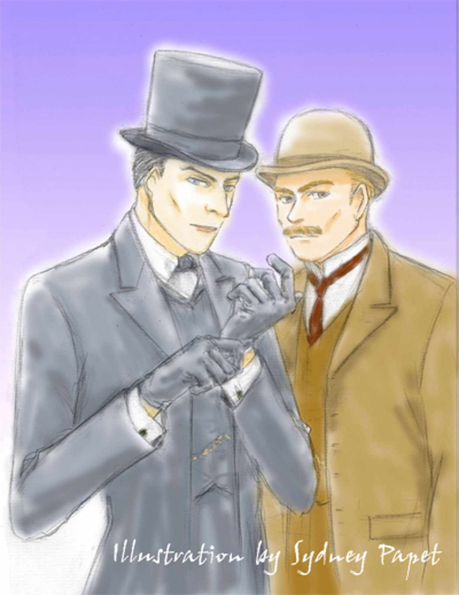

| 【統合版】追憶のシャーロック･ホームズ－ワトスン博士最後の告白－ | |
| ホズマー・エンゼル & 牛乃 あゆみ | |
| SUSSANRAP (2012) | |
ホズマー・エンゼル 作 ／ 牛乃あゆみ 訳
Recalling Sherlock Holmes
By Hosmer Angel
Copyright 2004, 2012 Hosmer Angel / Ayumi Ushino
［画像］ 資料画像『聖イレーネの介抱を受ける聖セバスチャン』
［画像］ イラスト
※［画像］ページは、ナビゲーション目次（「移動」）の項目には表示されません。
ヴェラニウス、いとしい友よ。
数しれぬ友の中で 最良の友よ。
君はもう異国から なつかしの住みかへ 還ってきたのかい？
やさしい兄弟や 年老いた母が待つ家へ？
還ったのだね！ ああ、なんとうれしい知らせだろう！
君は無事にもどったのだ。君に会いに行こう。そして聞こう。
スペインの人々や 風土や 習慣について
君があの いつもの仕草で話すのを。そして君の首を抱きよせて
笑みをたたえた目と唇に 接吻しようか？
幸運に恵まれ 神に祝福された者は 山ほどいるが
君をえた僕より 幸せな者などいるだろうか？
「シャーロック・ホームズの墓はどこにあるのか？」
私は何度聞かれたことだろう。それはけっして見つからない所、とだけ申しあげておこう。彼には崇拝者とおなじくらい敵も多かった。あるいは敵のほうが多かったかもしれない。彼自身は死後の災難など気にかける男ではなかったけれど、これは私をふくめ、残された老いさき短い者たちの、心の平安のためである。
わが友シャーロック・ホームズに関する私の著作は、ときおり公正さを欠いていると言われてきた。ホームズ自身にも、彼の才能や成功だけを強調し、私の役割をひかえめに書きすぎだと指摘されたことがある。
まず私が言いたいのは、あの一連の著作物は、事実にもとづいてはいるが小説だということである。もちろん公表するに適さない事実は取りあげていない。そして私が自分のことにあまり言及しなかったのは、べつに謙譲の精神からではない。切実な理由があったのだ。私の一人称により書きつづった物語で自分の行動を詳述すれば、いきおい私の個人的感情を、かなりの比率で混入させることになってしまう。そうするわけにはいかなかったのだ。
だがホームズがすでに他界した今、真実を偽ることになんの意味があろう？ 私は今、病院の窓から、医師としてでなく患者として世の中を見ている。そして自分の脳の病が、大事な記憶を消し去ってしまうかもしれないことを知らされた。時間はあまりない。真実と真実でないものの見分けがつくうちに、この、私の個人的感情を抜きにしては語ることのできない物語を、書きおえたいと思っている。
この事件は、私とホームズがベーカー街の下宿に同居しはじめて三年目の秋の出来事で、彼は二十九歳、私は三十一歳であった。のちに犯罪学の天才と呼ばれるシャーロック・ホームズが、未熟さゆえに冒した無謀や失敗、また、ゆくゆくは忌まわしい宿命で結ばれることになる、ある人物との最初の出会いも、この物語の中で初めて明かすことになる。
この事件を思い出すとき、まず私の脳裏にうかぶのは、私たちのベーカー街の部屋と、あの夜の居心地のわるい空気だ。私たちは、美術蒐集家として有名なハイアムズ卿の私的オークションから帰ったばかりだった。私は落ちつかない気持ちで、椅子の背に脱ぎすてられたホームズのフロックコートをじっと見つめていた。あきれたことに、私はハイアムズ卿への嫉妬を感じていた。
ホームズはなにごともなかったようにストラディバリウスを取りあげ、いつものように目をとじて、ものうげな旋律を奏でた。細長い指の繊細な動きと、恍惚とした白い横顔をぼんやりとながめながら、私は自分の心の中にわき起こった苦々しい感情を噛みしめた。
私はその日まで、自分がホームズの友情をかち得ている唯一の人物なのだと、ひそかに自負していた。しかし今思えば、それは彼を一種の人格的破綻者とみなすことからきていた。つまり、彼を他人との間に人間的な、親密な関係を築くことができない男だとみなしていたのである。まだ二、三年しかつきあいのなかった私にそう見えたのも不思議はない。彼は捜査の中で人の心理を読むことはあったが、それはどこかあまりに合理的、理論的であって、経験や共感にのっとったものではなかったし、感情に従いがちな女性については、はじめから理解不能ときめてかかっていたのだから。
ところがその日、彼は私の目のまえで、あっさり"人間的"な関係を作ってのけたのである。それまでにも、彼が一瞬にして相手の警戒心を解かせる術を心得ているのは知っていた。しかしその日彼がしたことは、その場かぎりの好印象をあたえることではなく、より継続的な関係を作ることだった。もちろん偽装にはちがいないのだが、あんなことは実体験がなければできないはずだ。私はハイアムズ卿ばかりでなく、ホームズのこれまでの人生において、彼にその実体験を提供したであろう見もしらぬ人々にまで、理不尽な嫉妬を感じた。
目のまえの演奏者は、無我の境地に旋律とあそんでいるようだった。私は急に彼と同じ部屋にいるのが苦しくなって、立ちあがった。ホームズは手を止めて私を見た。
「どうしたんだい？」
「もう寝るよ。少し疲れたから」
「そうだろうね。おやすみ、ワトスン」
ホームズはふたたび目をとじると、ゆるやかな調べを奏でだした。私は落ちつかない気持ちを抱えたまま居間を出た。
寝床に入っても寝つけなかった。私は起きあがってランプをつけ、その日の出来事をノートに書きつけはじめた。
ハイアムズ卿の主催する美術オークションは、たんに競売と呼ぶにはあまりに風変わりであった。オークションは非公開で、参加者は卿が招待状を送付したいくつかの、その嗜好において多少悪名たかいクラブの会員たちと、その同伴者だけであった。
オークション会場となったのは、郊外の青柳館という広大な屋敷で、もちろんハイアムズ卿の住まいである。年代を感じさせる、美しい蔦におおわれた館は、ゆるやかな丘の頂上を占めるようにそびえ建っており、まわりを守るように落葉樹の森が広がっている。門から入ると最初に見える母屋は、玄関のホールをはさんで東西に分かれており、さらに裏手には木立をへだてて棟がふたつあった。こちらにはあるじ自慢の古武器や骨董などのコレクションがあり、おもに趣味のために使われていた。その日はもちろん来客に開放されて、紋章の入った古い楯や石弓にまじって、冗談らしく陳列されたエドワード二世の冠だの、聖剣エクスカリバーだのが皆の目を楽しませた。裏庭には植えこみを刈りこんで作った迷路があり、さらに下っていくと葦の生えた池があった。その岸の一角に、館の由来となった柳の大木が立っていた。
ハイアムズ卿は、べつに経済的理由から手持ちの美術品を売っているわけではない。同好の士との交遊の場としてそのオークションを催しており、そのために年に数回、大陸へ美術品の買い付けに行っていた。気にいったものは手元におきたくなりそうなものだが、卿は仲間とそれを分けあうことを好み、たとえ売上げが投資に見あわずとも......常にそうだったらしいのだが......気にしなかったという。卿と親交のあついメルピット氏という競売人を立て、いちおう競売の体裁はととのえていたものの、いうなれば一種のサロンであった。なんとも金のかかる道楽である。
ホームズはそのころ、メサイアの瞳という宝石の盗難事件を追っていた。その捜査線上にハイアムズ卿の名がうかび、その日の潜入とあいなったわけである。ホームズが裏でどう手をまわしたのかは知らないが、私たちはとある子爵とその友人として青柳館にまぎれこんでいた。
その日のホームズは黒い髪を粋になでつけ、アスコット・タイに異国風のピン、日ごろの彼なら鼻で笑うような華やかな織り模様の入ったチョッキなどを身に着けて、いっぱしのしゃれ者貴族と化していた。青白い顔にも薄く化粧をほどこしていたので、私と並ぶ と 十 も年が離れているように見えた。
カタログに記載された品々は、この広い邸内ぜんたいにわたって趣向をこらして展示され、値付け人たちは午前中いっぱいかけて下見を楽しんだ。
その趣向は、たとえばキリスト生誕の絵には三賢人に扮した役者を配し、天使の絵は背中に羽根をつけた半裸の少年たちにかかげさせるという具合で、各部屋の装飾も展示品の主題に合わせてあり、展示自体が見せものとなっているのだった。どことなく退廃的なものばかりで私の趣味には合わなかったが、ホームズは判じ物を読み解くように、面白そうに見いっていた。
競売品の下見がおわると、庭園で豪華な昼食が饗された。午後にはギリシャ風の衣装をつけた美しい青年たちが、庭に好き勝手に散らばった客たちに飲み物をはこんだ。ようやく競売がはじまったのは午後三時であった。
あつかわれたのは絵画がほとんどだが、彫像や宝石もいくつかあった。ホームズは出てきた美術品や宝石の来歴を、いちいち私に耳打ちした。彼は二、三の品の値をつり上げるのに一役買い、結局はひとつも競りおとさなかった。彼は競り負けるとあからさまにくやしそうな顔をし、めったにしない舌打ちまでしてみせた。
競売がおわり、彫刻で飾られた広間に出た私たちは、葉巻をやりながら、着飾った紳士淑女の群れをながめた。私は少しからかうように言った。
「ホームズ、ひとつも競りおとせなかったじゃないか」
「競りおとすのが目的ではないよ。これでいいのさ。ハイアムズ卿を見たかい？ 彼は僕に目をつけたぜ。あのちょっとした演技で、僕は美術品に目がなく、熱心だが少々手元不如意な貴族の息子ってあたりに見られたはずだ。必ずあちらから声をかけてくるよ」
「そううまくいくかな」
「いくさ。僕が競りに加わったものがなんだったか覚えているかい？」
「全部絵だったけれど......」
「オランダ絵画だよ。つまりハイアムズ卿とぴったり趣味の合う若造というわけさ」
葉巻を吸い終わらないうちに、ホームズの言ったとおり、ハイアムズ卿が声をかけてきた。
「お楽しみいただけましたか？」
ホームズは、それ見たことかと言わんばかりにちらりと私を見た。ハイアムズ卿はあいさつしてホームズと私に握手を求めた。卿はうすい口ひげをたくわえた、みるからに洗練された紳士だった。髪こそ半分白くなっていたが、もし人のよさそうな目尻のしわがなかったら、冷たい印象をあたえそうなほどの美男である。背丈は長身なホームズよりもさらに少し高いくらいだが、やわらかい物腰のせいで威圧感はまったくなかった。
「そりゃあもう、すばらしかったですよ」
ホームズは少し声をうわずらせて答えた。卿は微笑んだ。
「オランダ絵画がお好きなようですね」
「目がありませんよ。今日出た画家はユトレヒト派でも目立たないほうですが、僕は好きですね。あんなのを手に入れたいといつも思っているのですけど」
「驚きましたな。国内ではあまり紹介されていない画家ですよ」
「オランダには滞在したことがあります。本国に入ってこないものもかなり見ましたよ」
「なるほど。あなたのような見る目のある方の手に渡ってほしかったものですね」
「そればかりは、なんともね」
ハイアムズ卿は目を細め、少し声を落とした。
「じつは今日出したものとはべつに、オランダ絵画をいくつか仕入れているのです。小品ばかりですが、よろしければお目にかけましょうか？」
ホームズは目を輝かせた。
「願ってもないことです。ぜひ拝見したい！」
「結構。しかし今すぐというわけにはまいりません。日をあらためて私の別邸の方にご足労ねがうことになります。内密にね」
ハイアムズ卿は意味ありげに私に視線を投げた。ホームズは私を振りかえって冷ややかに言った。
「君、あちらのエンデュミオンはなかなか見事じゃないか。見てきたらどうだい？」
私はしぶしぶ所ばらいを承諾した。ハイアムズ卿はホームズの腕をとると、部屋の隅のガラスで仕切られたテーブル席に彼を案内した。私はどれがエンデュミオンとやらなのかさっぱりわからないまま、白い裸像の列をながめるふりをしながら様子をうかがった。
ハイアムズ卿は給仕にワインをはこばせ、ホームズと自分の分をそそぐとホームズにグラスを渡した。二人はワインをすすりながら、いかにも楽しげに話しはじめた。ホームズは見るからに熱心で、ハイアムズ卿の一言一言に身を乗り出していた。しばらくすると、卿はホームズの肩に手をおき、耳元になにかささやいた。ホームズは一瞬目を見ひらき、ゆっくりとはにかむように微笑んでうなずいた。彼のあんな顔は、あとにも先にも見たことがない。
二人はテーブル席から出てきて握手をした。ホームズは私を手招きして、そろそろ引きあげようと言った。ハイアムズ卿はホームズに目を釘づけにしたまま、私への気遣いを言った。
「どうも、お友達にご退屈をさせてしまいましたかな」
「彼はギリシャ彫刻にぞっこんなのです。君、もっと見ていたかったくらいだろう？」
「まあね」
どうも割に合わない役まわりだったが、ホームズがこうしているのはきっと理由があってのことなのだ。ホームズはもう一度ハイアムズ卿に向きなおると、聞いたこともないような若々しい声で言った。
「今日は本当に夢のようでした。ではまたあらためてうかがいます」
「どうぞ、夢のつづきを見にいらっしゃい」
歯のうくような言葉に送られて、私たちは屋敷をあとにした。
馬車に乗りこむと、ホームズはたまりかねたように吹き出した。
「まったく傑作だね！」
「なにがだい」
私は自分の声が不機嫌な響きをもっているのに気づいて、少しきまりがわるかった。
「どうしたんだ、ワトスン？ まさかさっきのことを本気で怒っているのじゃあるまいね？」
ホームズは笑いすぎてうるんだ眼を親指の腹でぬぐいながら、まだ半分笑っているような声で言った。
「見そこなうなよ。それよりなにが傑作なんだい」
「あのくわせもののおやじさ。まったくあきれたものだよ」
「なんだか君のことを気にいっていたようだぜ」
「当然だよ。あいつのお望み通りにふるまってやったんだからね。それに君がいたのがよかったんだ」
「僕が？ なにもしちゃいないじゃないか」
「君が僕と一緒にいたから、わざわざ君から引っぺがしてみようという気を起こして僕を誘ったのだよ、あいつは」
「なんだいそりゃ。わからん心理だね」
「そうだろうねえ！ 君のような紳士には」
ホームズはのどの奥で笑いを噛み殺した。私は少し不快になって話題を変えた。
「メサイアについてはなにか聞き出せたかい？」
「そうあわてちゃいけないよ。宝石のことは一言も話していない。だがあいつはずいぶん気を許しているから、明日は少し口をすべらせてくれそうだ。明日の午後、ロンドンの別邸に招待されたよ。オランダ絵画の逸品とやらをエサに、僕を釣りあげたつもりでいるのさ」
「釣りあげた？」
「君も知っている通り、彼にはちょっとした悪癖があるからね」
「悪癖？」
私はいやな予感がして、急に胸の中がむかむかとしてきた。
「知らないのかい？ あのおやじのお稚児趣味は裏では有名なんだよ。画家やモデルにも手を出しているが、それであき足らずに、ああいうオークションやクラブで上流階級の子弟を物色しているんだ。美術談義のできる相手がお好みなのさ。自分の違法な悪癖をなにか高尚なものと勘ちがいしているのだろうね。まあそのうちに恐喝事件の被害者になるくちだよ」
ホームズは犯罪年鑑でも読みあげるように、こともなげに言った。私はあきれ、胸のむかつきはいよいよひどくなった。
「そんな......君は......」
「はっ、へんな心配はやめてくれたまえ。僕はそこまでつきあうほどお人よしじゃないよ」
ホームズはうんざりした様子で私を見た。彼はもういつものホームズにもどっていた。ハイアムズ卿を相手にしていたときの陽気な若々しさや、少し愚かにさえ見えるうぶな純真さは消えうせ、かわりにいつもの冷ややかな灰色の目が、重たげなまぶたの下から私を見ていた。下世話な心配をもち出した私に失望したかのように。あるいは彼の鋭敏な感覚が、なにかべつのものを嗅ぎつけたのかもしれない。
私はペンをおくと、むりにも眠ろうと寝床にもどった。階下からは、静かなヴァイオリンの音色がまだ聞こえていた。
翌日の午後、ホームズはハイアムズ卿の別邸へ出かけていった。私は黒いフロックコートに包まれたほっそりした体が馬車の中へ消えるのを、二階の窓から見とどけた。そのあとはベーカー街の部屋から一歩も出ず、いっこうに埋まらないノートと時計を交互ににらみつけていた。七時すぎにハドスン夫人が夕食を運んできてくれたが、とてものどを通らず、ホームズがもどったら一緒に夜食をとるからと言って下げてもらった。
十二時をまわっても、ホームズはもどらなかった。私は混乱し、自分がなにを心配しているのかさえわからなくなっていた。ホームズはあえて武器はもっていかなかったのだ。もし正体がばれたのだとしたら？ 私が恐れているのはそのことだろうか？ ホームズは自分の身は自分で守れる男だ。知能も体力も私よりずっと上だし、拳闘の腕は玄人はだしだ。だが相手が武器をもっていたら？
それともホームズは、自分の意志で屋敷にとどまっているのだろうか？ 朝までいるつもりなのだろうか？ 彼が捜査のために一晩中帰らなかったり、それどころか数日部屋をあけたりすることなど、日常茶飯事だった。だがその夜だけは、私には耐えられなかった。私はまえの晩の彼が、私の心配を一笑に付して見かえした冷ややかな目を思い出した。私は恐れていた。あのとき私は捜査自体の危険よりも、彼があの美男のハイアムズ卿と会うことに気をもんでいたのだ。彼はそれに気づいたのだろうか？
私は自分がばかげたことを考えているのに気づいた。彼が自分の意志で卿の屋敷に泊まったなどと聞かされるくらいなら、彼が殺されたと聞かされるほうがましだ、と。
暖炉のおき火を見つめながら、ぐるぐると落ちつかない考えをめぐらせていると、おもてに馬車がとまる音がした。時計を見ると、あと数分で一時というところだった。玄関のドアを鍵であけ、階段を上ってくる聞きなれた足音がしても、私はドアに背を向けてソファに座ったまま、動くことができなかった。部屋のドアがゆっくり開く音がし、ホームズは朝帰りをした放蕩息子のように、息をひそめて部屋に入ってきた。
「ワトスン、起きていたのかい？」
私はやっとの思いでぎこちなく振りかえった。ホームズはフロックコートを脱ぎながら、いやに快活に微笑んだ。
「もう遅いから報告は朝にするよ。くたくただ。ああ、すまないが軟膏はあるかな？ 馬車のドアに手をはさんでしまってね」
私の心配をよそに、あまりに気軽なあいさつをされたのが気にいらず、私は通りすぎようとするホームズの手首をつかんだ。一瞬彼ののどからかすかな悲鳴がもれた。私はびっくりして手を引っこめたが、あわててもう一度彼の手をとった。右の手首に不器用にハンカチが巻かれており、それをほどくとひどいすり傷があらわれた。ドアにはさんだ傷などではなく、明らかに革紐かなにかで縛った跡だ。ホームズの顔を見あげると、彼は少し眉をひそめて私を見かえした。
「なにをされたんだ？」
私は自分の声がかすれているのを聞いた。情けないことに目までうるんできて、ホームズの白い顔がかすんだ。
「なんでもないんだ。ワトスン、大丈夫なんだよ」
ホームズは少し狼狽して私の隣に腰をおろした。私は自分の体がふるえるのを抑えることができなかった。
「ばかな！ こんな......こんな......」
私はわきあがる感情に流されて、ホームズの手を両手で包んだままその上へ顔を伏せた。
「行かせるんじゃなかった」
あろうことか、私は泣き出してしまった。
私の常軌を逸した動転ぶりに、ホームズは困惑しているようだった。実際あのころのホームズには無鉄砲なところがあったので、捜査に出かけると生傷をこしらえて帰ってくることがよくあった。だが私はもちろん動転したことなど一度もなかった。（余談だが、これまでに発表した小説では、彼の名誉のためにそういった騒動をいくつか省いている。彼がすばらしい拳闘家であったことはすでに述べたが、若者にとってこの種の自信はわざわいとなることのほうが多い。彼は何度か加害者として訴えられかけたことさえあった。もちろんホームズは本質的に乱暴者ではなかったし、その後数年のうちに、そういった面倒をさける賢明な術を身につけたのである）
だがその晩のすり傷は私をたたきのめした。そしてこの出来事が、私が秘めていたなにかを暴き出すのではないかという漠然とした恐怖と、一日中つづいていた緊張からくる疲労が、私をさらにヒステリーのような状態にさせていた。
ホームズは私の腕にあいた方の片手をおいて、静かにさとすような口調で言った。
「ワトスン、必要だったんだ。そうでなきゃ僕はこんなことさせやしないよ。わかるだろう？」
私は頭がくらくらして、言葉の意味をとるのに手間どった。なにが起こったのだろう。彼はなにを言っているのだろう。だが彼の言葉はゆっくりと私の理性にまで落ちていき、私を少し落ちつかせた。
「ホームズ、君は自分を無頓着に使いすぎるよ。君の名誉がこんな風にけがされるなんて......」
「なにを言っているんだ。僕の名誉はこんなことでぐらつきはしないよ！」
ホームズはやさしいがきっぱりとした声で答えた。私は見当はずれの考えすぎをしたのかと恥ずかしくなった。そんなことは起こらなかったのかもしれない。それに私が反対しようとどうしようと、ホームズの行動を変えさせることなどできないではないか。彼はいつも自分の意志で行動し、私にできることはあとで話を聞くことくらいなのだ。
私は落ちつこうとつとめながら、鼻をすすりあげた。ホームズはとまどっていたが、やがてむずかっている子供の様子をうかがうように、私の肩に手をおいて顔をのぞきこんだ。
「君がこんなに心配しているなんて思いもよらなかったんだ。すまなかったよ。顔をあげてくれたまえ」
「もうこんなことはしないでくれ」
返事は期待していなかったが、案の定ホームズは私の言葉に答えず、私の腕をささえて体ごと顔を起こさせた。
「君のほうがまいってしまったようだね。本当にすまなかった。迷惑をかけついでに、この手当てをしてもらえると助かるんだが。頼んでもいいかい？」
私は自分が情けなかった。ホームズは私のために、自分でできるささいなことをわざわざ頼んでいるのだ。私は目をぱちぱちとやって、かすみを追いはらった。いまや私のほうがよほど案じられており、私は彼を安心させたかった。
「かばんを取ってくるよ」
「ありがとう」
ホームズの気遣わしげな顔に、私は自分がいかに取り乱していたかを思い知った。彼が私にこんなにもやさしい態度を見せたのは初めてだった。
私は医師の立場に徹し、その傷のもつ意味は考えまいと心の中で葛藤しながら、消毒をして包帯を巻いた。だが事実がわからない分よけいに、不安が際限もなくふくらんだ。ホームズは私の心を読んだように説明しはじめた。
「べつに虐待されたわけではないんだよ。これはあの男によると審美的な意味を深めるためなんだそうだ。少々底の浅い、退廃的な趣味におぼれているのさ。寝室の壁に聖セバスチャンの見立て絵なんか掛けているような男だからね」
ホームズの口調は、いかにもたいしたことではないのだと言わんばかりだった。だが彼がハイアムズ卿の寝室に入ったのだと思うと、私は気が遠くなるような感じがした。やはり考えすぎなどではなかったのだろうか。つづきを聞きたくはなかった。だが聞かなければ、また確証のない不安にさいなまれるのだ。私はなるべく平静をよそおいながら先をうながした。これはいつもと同じ、たんなる捜査内容の報告なのだと自分に言い聞かせながら。
「聖セバスチャンて、裸の若者に矢がたくさん刺さっている絵かい？」
「そう、人気の殉教者で射手とペストよけの守護聖人だ。奴はあのテーマがえらく気にいりでね。しかも絵の場面を再現して鑑賞する趣味があるらしい。べつに本当に殺人未遂をするわけじゃないよ。ちょっとした芝居小屋並みの小道具をもっているのさ。それで活人画をやって、それを絵に描かせたのを何枚ももっているそうだ。寝室にあったやつは、イタリア人画家の弟にポーズをとらせて......メッシーナのセバスチャン風に、うわの空って感じでね......それを兄のほうに描かせたのだと自慢していたよ。奴はヘンドリック・テル・ブリュッヘンのセバスチャンを僕にやらせたがった。これは聖イレーネに助けられて杭から解かれている場面だから、災難も片手ですんだ。ワトスン、僕もたいがい変わったことは経験しているが、こんなにばからしい茶番は初めてだよ」
ホームズは鼻で笑って、包帯が巻き終えられた手を引っこめた。そしてマントルピースに歩みよると、ペルシャスリッパからタバコをひとつまみとり出して、パイプに詰めながらつづけた。
「次は画家を呼ぼうと言っていたよ。次などないがね！ まあそれはいいとして、奴はたいした度胸の持ち主ではない。悪事に加担するにしても、荒っぽい仕事には向かないね。血糊や古代の武器は好きなようだが、本物の流血沙汰など見たら卒倒する男だ。それに不用心で、たった二度しか会っていない僕を警戒もしていなかった。こちらも悪趣味らしくほのめかしてやったら、えらく嬉しがってたいへん丁重にあつかってくれたよ」
そんなことを聞いても、私にはなんのなぐさめにもならなかった。はたしてそのばからしい茶番につきあわされただけだろうか？
そのとき、ホームズのゆるめたカラーの隙間から、薄紅色の小さな跡が、くっきりとのぞいているのに気づいた。私は目のまえが暗くなり、体が椅子に沈んでいくような感覚をおぼえたが、ひじ掛けを強くつかんで、やっとの思いでもちこたえた。私は彼のあまりの無頓着さについていけなかった。私の感情など抜きにしても、それはただではすまないことだ。捜査のなりゆきとはいえ、もし法を破ったのなら、それが露見すれば彼自身が社会から葬られるだろう。（もっとも、現在ではこの法律は変わる流れにある。遠からず、当時の私の心配は大げさに見えるようになるだろう。そうだとしたら、ここでオスカー・ワイルドの裁判を思い起こしていただきたい。文学・演劇界の寵児だった彼は男色罪で有罪となり、二年間の重労働刑に服した。釈放後は世間の白眼視をのがれてフランスに渡り、わずか三年後にパリで客死している。四十六歳の若さであった。ワイルドはホームズと同年の生まれである）
私はホームズに言った。
「少し無謀だったんじゃないか？ 君自身がこんな危険まで冒す必要があったのかい？ 正体がばれたらどうするつもりだったんだい？ 卿の悪癖がわかっていたなら、世の中にはその......そういう道の専門家がいるだろう？ 彼らを雇うことだってできたじゃないか」
私はあくまで、常識にてらして彼の無謀を非難するように言葉をえらんだ。だが、本当は彼がまえの晩に言った「そこまでつきあうほどお人よしじゃない」という言葉が、どの程度守られたのかを知りたかったのだ。それはむしろ祈るような気持ちだった。あの首筋の跡も、ただのできものか虫さされなのだと言ってくれれば、私は藁をもつかむ思いで信じただろう。ホームズは暖炉の石炭をはさみあげてパイプに火を吸いつけながら、私を横目で見た。
「ワトスン、ただ入りこむだけじゃだめなんだよ。必要な情報をつかみ、つぎの捜査への筋道をつけて、もちろん無事に脱出して僕に報告してくれなくちゃならない。その手はずやハイアムズ好みの美術の知識を教えこんで、けっして裏切らないような内通者を仕立てるなんて、できると思うのかい？ いろんな手を考えた上で、一番効率のいい方法をとったまでさ。うぬぼれるわけじゃないが、たった半日の滞在でこれだけの情報をつかむことのできる奴は、僕のほかにはいないと思うね」
ホームズは早口でまくしたてた。それは明確な答えだったが、私が聞き出したかったのはべつのことだ。彼の頭には捜査のことしかないらしい......あるいは私がしたように、ホームズもうまくはぐらかしたのだろうか？ だがそれ以上追及することはできなかった。私の抗議は結局は感情に根ざしていたのだし、まさにその感情を暴かれることを、私は恐れていた。私は譲歩するしかなかった。
「というと、成果はあったのだね？」
ホームズは帰宅してから初めて会心の笑みをもらして、うまそうに煙を吐いた。
「もちろんさ。とんでもない大漁だよ！ だがその話は明日にしよう。いや、もう今日だが......君だってどうせ記録を取りたいのだろう？ 今からはじめたら朝になってしまうよ。ひと眠りして頭をすっきりさせてからはじめよう」
「君がそう言うならそうしよう。手首のほかは、本当に大丈夫なんだろうね？」
「ああ」
私は医療かばんをとって立ちあがりかけたが、ホームズは動く気配がなかった。
「眠らないのかい？」
「僕はここで眠るよ」
ホームズはソファに長い足をのばすと、うつろな目で宙を見ながら、ゆっくりと煙を吐いた。暖炉の火に照らされた横顔が、急にひどく疲れて見えた。
私はその瞬間まで、自分の動揺を落ちつかせるのに精いっぱいだった。だがそのとき初めて、ホームズもまた精神的打撃をこうむったことを隠していたのではないか、ということに思いがいたった。これまでの無頓着そうな元気は虚勢だったのかもしれない。私の動揺を見れば、そうせざるをえなかったのは当然だ。だとしたら私が寝室へ引きあげたあと、彼はまたひとりで７％溶液に頼るのだろうか？ 私はソファの向かいの椅子に座りなおした。
「僕もここで寝るよ」
ホームズはこちらを振り向くと、苦笑いをした。
「コカインなんかやらないよ」
「ここで眠りたいだけさ」
「そうかい。ではおやすみ」
ホームズはパイプをたたいて灰を始末すると、背をこちらに向けて横になった。私はしばらく彼の背中を見ていた。暖炉の炎の影が伸び縮みするのに合わせるように、あれこれとばらばらな考えがうかんでは消えた。だが、とにかく今ホームズはここにいるのだと思うと、だんだん落ちついてきた。まぶたが重くなってきたので、寝室から毛布を二枚もってきて、一枚をホームズの体にかけた。
「ワトスン」
ホームズの声がした。私は少し驚いて彼の顔をのぞきこんだ。目はとじたままだった。
「なんだい」
ホームズは私に背を向けたまま、もぞもぞと動いて頭のおさまる位置を探し、そのまま動かなくなった。寝言だと思って私はそうっと向かいの椅子にもどった。そのとき、やっと聞きとれる程度の小さな声で、彼がつぶやいた。
「君がいてよかった」
私は胃のあたりがほんの少しあたたまるのを感じた。だが、これもまた私をなぐさめるために言っているにちがいない、という考えが、そのあたたかさを消しおおせてしまった。
私は彼の背中におやすみと告げて目をとじた。
私の気まぐれな回想から書き起こしたため、事件のはじまりをすっかりはしょってしまった。ここでことの発端を記そう。
そもそもの始まりはその四日まえにさかのぼる。いつもの夕方の散歩からもどると、私たちの下宿のまえに立派な二頭立ての馬車がとまっていた。
「ホームズ、仕事じゃないか？」
しばらく仕事らしい仕事がなく、ホームズは沈みがちだったので、私はつとめて陽気に言った。しかもなかなか富裕な依頼人だ。ホームズはものうげに目を細めて馬車を見たが、興味もなさそうに通りの反対側に視線をはずし、そこにいる浮浪者たちをながめて鼻を鳴らした。
「引き受けると決めるまでは仕事じゃないよ」
部屋で私たちを待っていたのは、有名な競売会社を経営するクリステン氏だった。ホームズはぞんざいに椅子をすすめ、なにが気に食わないのか、クリステン氏が宝石の盗難を打ち明けはじめても、パイプをふかしてそっぽを向いたままだった。クリステン氏は仕方なく私に向かって話をつづけた。
「来月の競売に出す予定の品です。カタログには載せてしまったし、私どもとしては......」
「盗まれたことは公表せずに、競売のまえに取りもどしたいのですね？」
「その通りです。うちはそこいらのいかさま競売屋とはちがいます。格式のある店です。発表した競売品が盗まれたとあっては、信用に障りますからね」
ホームズの横顔がかすかに皮肉な笑みをうかべた。クリステン氏は気分を害したらしく、咳ばらいをした。そして横目でホームズを見ながら、少し声を大きくして言った。
「実際、金銭的な損害はないのです」
「というと？」
「じつをいうと盗まれたのではないのです。すり替えられたのです。しかももとの宝石より高価なものと」
ホームズは急にくるりと首をまわして、クリステン氏に顔を向けた。
「くわしくお聞かせください」
氏の話によると、メサイアの瞳とよばれるその宝石は、さる高名な伯爵の遺品の中のひとつで、古い文様入りの十字架にはめこまれたエメラルドだという。まん中に瞳孔と虹彩のように見える結晶が入っていて、もとはたいへん古い教会の物であったらしい。だが価値はその珍奇なところにあるのであって、その特徴となる不純物が示すとおり、宝石自体はそれほど質の良いものではなく、十字架にほどこされた文様を潰したり、エメラルドを取りはずして宝石として売ろうとすれば、かなり値が下がるということだった。
一方それとすり替えられていたのは、十六世紀の有名な画家、ポンテローシャの『リュートを弾く男』という絵である。小品だが、鑑定したところ正真正銘の真作で、値をつければメサイアの瞳をうわまわるという。私はあきれて、思わず本音を言った。
「では損はないではありませんか！」
「よその店ではどうだか知りませんが、いくら真作でも、そんな形で手に入ったものなどうちではお売りできませんよ。先ほども申しあげましたとおり、信用の問題なのです。私どもの商売は信用が第一ですからね」
クリステン氏はつんとして言いはなった。私はホームズがまた皮肉を表するかと心配したが、彼はすっかり事件に夢中になっているようだった。
「すり替えられたのはいつですか？」
「月曜日の晩だと思います。その日に倉庫係があらためたときはあって、翌日の朝消えていたと申しますので」
「三日もたっている。どうしてもっと早くいらっしゃらなかったのです」
「われわれなりに探したのです」
クリステン氏は額に汗をうかべた。
「それにできるだけ内密にしたかったものですから。あなたは秘密を守ってくださる方だとうかがっておりますので......」
「もちろんです。その点は信用していただいてけっこうですよ。私の商売も信用が第一なのです」
ホームズは品の良い微笑をうかべた。
「明日そちらへうかがいます。盗難現場を見て、宝石が消えているのを......名画に変わっているのを発見した証人に話を聞きましょう」
「明日ですか？ 今すぐにお越しいただいたほうが良いのではないでしょうか？」
「現在かかえている仕事がありましてね」
私は思わずホームズの顔を見た。彼はちらりといたずらっぽ い 一瞥 を返した。
「それに二、三下調べしておかなくてはなりませんから」
「そうですか......では明日」
クリステン氏 が 不承不承 立ち去ると、ホームズは安楽椅子の上に両足をあげてあぐらをかき、パイプをふかしながら上機嫌で言った。
「ふふ、面白いぞ、この事件は」
「たしかに変わったことをする犯人だが......」
「もっと面白いのは依頼人だよ」
ホームズはにやりとした。
「競売人の言い立てなんか真に受けてはだめだよ、ワトスン。『さる高名な伯爵の遺品』なんて言うときは、たいてい実際は遺品なんかじゃないのさ」
「じゃあ彼は嘘を言っていたのかい？」
「信用のために取りもどしたいというのもね」
「君らしくもないね。なぜ黙っていたんだい？ 依頼人の側に嘘があるのでは話にならないと言っていたじゃないか。それに今かかえている仕事なんてないだろう？ すぐに捜査をはじめたらいいじゃないか」
ホームズはパイプを口からはなして、ふくみ笑いをした。
「はじめているよ。一日待つことがまず第一歩なのさ」
私はそれから数日間、大学時代の恩師に呼び出されてロンドンをはなれたため、ホームズの実地検分に立ち会うことができなかった。
私が帰宅した夜、ホームズはいなかったが、翌朝居間へ行くと彼はもう朝食をとっていた。いつものとおりなんの説明もなかったが、彼の食欲が旺盛なのを見て捜査がうまく進んでいることを確信した。そのあと彼は、正装してハイアムズ卿のオークションに同行するよう私に言ったのである。
以上が事件のはじまりである。ホームズがハイアムズ卿の屋敷からもどった翌朝のベーカー街に、話をもどそう。
私が目をさますと、ホームズの元気の良い声がした。
「おはよう、ワトスン。よく眠れたようだね」
ホームズはもうさっぱりと髭を剃り、新しいシャツの上にねずみ色のガウンを着て、マントルピースにもたれながらコーヒーをすすっていた。顔色がわるく、いくらも眠っていないようだったが、目はいきいきと輝いていた。彼はこの事件が気にいっているようだ。こういうときの彼は、まるで事件自体から栄養をとっているように疲れをしらない。
私はゆうべのことを夢のように思い出しながら、体を起こした。ホームズはきびきびと部屋を横ぎると、ハドスン夫人に私の朝食を運ぶよう頼んだ。
「君が朝食をすませたら、さっそく昨日仕入れた事実の検分にかかろう。わるいが急いでくれたまえ」
「君は食べないのかい？」
「先にすませてしまったよ。けっこうがちゃがちゃとやっていたんだがね。君は眠りが浅いと言っていたが、なかなかどうして堅固な睡眠だよ」
「君も軍隊生活をしたらこうなるさ」
ホームズは片方の眉をつりあげて微笑した。いつもと変わらない、他愛のないやりとりができるのが嬉しかった。昨夜の出来事は私たちの友情になんの影もおとさず、私たちはただ事件を追うのだ。
「君が食べている間に、少し出てくるよ」
ホームズはフロックコートに着替えると、帽子とステッキをつかんで部屋を出ていった。
タマゴの最後のひとかけを口にいれようとしていると、ホームズが新聞を手に駆けこんできた。
「ちくしょうなんてことだ！」
「どうしたんだい」
ホームズは黙って新聞を投げてよこした。私は目をうたがった。
「ハイアムズ卿殺 害 !? 」
ホームズは帽子をソファに投げつけた。
「しかも容疑者は僕だ」
私は記事を読みあげた。
「『執事によると、屋敷には昨日午後ジョン・ブライトン子爵と称する男が訪問し、深夜まで滞在した......ブライトン子爵は午後十一時ごろ屋敷を出ている。卿はいつもの習慣で来客の帰宅は見送らず、そのまま自室にこもっていた......今朝執事が卿の変わりはてた姿を発見......警察の調べでは、ジョン・ブライトン子爵なる人物は実在せず、偽名を使って入りこんだものと思われる......男は二十代前半、黒髪で痩せた長身......』ホームズ、ここまで屋敷の馬車で来たんじゃないだろうね？」
ホームズは手を振って私の言葉をさえぎった。
「いくら警察がぼんくらでも、そんなことをしたならとっくに警官がここへ来ているよ。もちろん行きも帰りも馬車を何度も乗りかえて......」
ホームズは突然なにか思い出したように動きを止めた。
「執事が遺体を発見した？」
「どうかしたのかい？」
「いや......うん、まだなんともいえないが、興味ぶかいね。死因はなんと書いてある？」
「『外傷はなく、遺体の様子から毒殺と考えられる』......毒物の特定はまだしていないようだ」
ホームズはせかせかと歩きまわった。
「現場を見ることができればいいんだが......」
「うーん、まずいことに担当はレストレード警部と書いてある。行けば執事にも面談させられるだろうよ。屋敷にはほかに誰がいたんだい？」
「執事と卿のほかには召使いの少年と......」
「女中でなく？」
「もちろん少年だよ。あとは聖イレーネをやった若者......」
「なんだ、客はもう一人いたのかい」
私は少し安心して言った。
「客じゃなくて、あの別邸にひそかに住みこませているようだ。卿は『私の天使』とか呼んでいて、名前は教えてくれなかった。金髪の巻き毛でフランスなまりのある、十六歳くらいの少年さ。つまり......」
「いや、わかった。説明はいらないよ」
私はハイアムズ卿にすっかり愛想をつかした。
「しかし聖イレーネってのはもちろん女性だろう？」
「そう、彼女はセバスチャンの体から矢を抜いた聖女だよ」
ホームズはからかうような視線を私に投げて、火をつけていないパイプをくわえた。
「黙っていれば君なんか近くで見てもだまされるぜ。たいした美少女だったよ。少し歯並びはわるかったけれどね」
私の鼓動は少し早くなった。ホームズはやはりとんでもない冒険をやらかしてきたのかもしれない。彼はパイプを口からはなした。
「だがあとから客はもう一人きたよ」
「オークションに来ていた客かい？」
「いや、来ていなかった。中年の大学教授だ。ジョナサン・セイルズと名乗ったが、変名だ。卿とは以前から親しかったらしい」
ホームズは暗い眼に妙な光を宿して宙を見た。
「僕はあいつを知っている。会ったのは初めてだが......」
「だれだい？」
「ロンドン一の大悪党さ。僕はいくつかの事件の黒幕だと目星をつけているが、なかなか尻尾をつかませない。賢いやつだ。二度ほど堂々と屋敷を訪問してやったんだが、会えなかった。あんな形で会うことになるとは思わなかったよ」
「すると、そいつが君の帰ったあとに卿を殺したのかな」
「いや、奴は僕より先に帰った」
ホームズは眉をよせ、しばらく窓の外を見て考えこんでいたが、くるりと振りかえるとテーブルの上に広げた新聞をパイプの柄でたたいた。
「執事はフランス人少年のことも、このもうひとりの客のことも隠している」
「どちらかが犯人で、執事が共謀しているのだろう。大学教授は君より先に帰ったのだから、少年が犯人かな」
「執事は両方の存在を隠しているのだよ......だが、証拠もなく推測なんかしても意味がない。ワトスン、連夜ですまないが、今夜も少し夜更かしをしてもらえるかね？」
深夜、私たちはハイアムズ卿の別邸にいた。私はこそ泥まがいの行為には気が進まなかったのだが、ホームズと同じ顔をした者が容疑者となっている以上、白昼堂々と乗りこむわけにはいかなかった。おもては警官がふたり立っていたので、裏手の塀を乗りこえて侵入した。ホームズは迷いもなくある部屋の窓の下に私を案内した。
「寝室だ。ここからはじめよう」
「卿は一階で寝ていたのかい？」
「そのうえ客間の隣で、隠し部屋でつながっているんだぜ。これは来客と楽しむための寝室だよ 。 寝 むための寝室は二階だ。もっともこの屋敷自体が娯楽用だから、そちらはほとんど使っていなかったようだが」
私がどんな顔をしたのかわからないが、ホームズは妙におかしそうに私の顔を見た。
ホームズが窓を器用にこじ開け、私たちは中に入った。壁にはホームズが言ったとおり、青年が法悦の表情で天を仰ぎ、その体にたくさんの矢が刺さっている絵が掛かっていた。私は昨夜ここでどんなことが行われたのかを考えないようにつとめた。
ホームズは角灯をつけ、天蓋のついた大きな寝台とその周囲を調べたあと、その向こうにまわって隅の本棚を探りはじめた。私は待っている間絵を見るまいと下を向いた。ところがそうすると月明かりに照らされた寝台が目にはいり、仕方なく窓を見ていた。
「ワトスン」
ホームズの声に振りかえると、本棚が動いて、かがんでやっと通れるくらいのドアが現れた。
ドアの向こうには部屋があり、入ると古道具屋のような匂いがした。中央にはペルシャ風のじゅうたんが敷いてあり、刀剣や弓、盾などが放りこまれた木箱が並んでいた。ほかにも蓋をした木箱がたくさんあり、部屋の隅には芝居の幕のような大きなカーテンがよせてあった。床にはローマ風の甲冑や兜がころがり、丸テーブルの上にランプが三つ、燭台がふたつある。奥には衣装箪笥があった。
ホームズと私は部屋のすみずみまで調べたが、手がかりになるようなものはなにもなかった。
「次はどうする？ ホームズ」
「しっ」
ホームズはもっていた角灯をかかげて部屋を見まわした。そして膝をついて床を数ヵ所たたいたあと、ぴたりと耳を床につけた。
「地下室がある」
ホームズは床板に手をかけながらほふく前進し、
「あった！」
と小声で叫んだ。私は手を貸して、はね上げ式の扉を開けた。
中には斜めにはしごがおりていた。ホームズは先に立ってゆっくりとはしごを降りた。地下室はせまかったが、戸棚には食器や水差しが備えられ、テーブルも椅子も、寝台もあった。少し前までろうそくを灯していたような匂いが、うっすらとただよっていた。
ホームズは部屋をぐるりと見まわし、部屋の隅のカーテンのかかった一角に歩み寄ると、ぱっとそのカーテンをあけた。中には少しあどけなさの残る、小柄な巻き毛の少年がおびえた顔をして身をちぢめていた。
少年はホームズの顔を見ると、一瞬驚いてあとずさりした。だがすぐにひらきなおったような態度になり、なにごとかフランス語でののしりはじめた。フランス語は不得手だが、それが罵倒であるのはわかった。ホームズは苦笑いをして私を振りかえった。
「ワトスン、怒れる聖イレーネだ。ブライトン子爵はポリ公だったのかと言っているよ」
ホームズは流暢なフランス語で少年になにかささやいた。さらに二言三言会話をして、少年の腕をとり、部屋の中央の椅子に座らせた。少年はまだ興奮しているようだったが、話し方は穏やかになった。ホームズは英語で言った。
「よかったら英語で話してもらえるかい？ 友人に通訳する手間がはぶけるのでね」
ホームズが丁寧にたのむと、少年は不審そうな顔で私とホームズを交互に見た。
「本当に警察じゃないんだろうね？」
「僕たちは私立探偵だ。警察に協力することはあるが、君の秘密の滞在程度のことを届け出る気はないし、その義務もない。知っていることを話してくれたら、おそらく君のためにも力になれると思うよ」
少年はホームズの顔を横目で見た。
「まあ、あんな警官はいないだろうけどさ」
ホームズは眉も動かさなかった。
「ハイアムズ卿が殺された時、君は......」
「殺された？」
少年はがく然として、フランス語でなにか言った。ホームズはまたフランス語で応じ、少年は肩を落として泣きはじめた。ホームズはため息をついた。
「卿が殺されるまえにここに入ったらしいな」
「どうする？」
「彼を連れて引きあげよう。話を聞き出すには時間がかかりそうだ」
ホームズは少年の耳元になにかささやき、着ていた上着を少年に羽織らせると、肩を抱いて立ちあがらせた。少年はホームズの肩に顔をうずめて 、 悄然 と歩きはじめた。私はなんとなく落ちつかなかった。
ベーカー街の部屋にもどり、少年を暖炉のまえに座らせると、私はハドスン夫人を起こしてミルクと残り物のビスケットをもらってきた。異国の地でパトロンを失った少年は、まだ放心状態のようだった。
明るいところで見ると、きゃしゃな体つきといい、大きな眼と赤い唇といい、たしかに少女かと見まがうほどの美少年だったが、日にあたっていない青白い肌はいかにも不健康に見えた。ホームズは少年の手にカップを握らせた。
「なにか腹に入れたまえ」
「ピーターは本当に死んだの？」
ハイアムズ卿のファーストネームだった。
「残念ながらね」
少年は涙をぬぐいながらミルクをすすった。
「いい人だったのに」
ホームズは私の顔を見て、同意しかねるというようにおどけた目くばせをした。
「君がハイアムズ卿と出会ったのはフランスでかい？」
「パリで。去年」
「ロンドンへ来たのは？」
「四月」
「彼の仕事についてなにか知っているかい？」
「絵を売っているよ。あんたはそこで会ったんでしょ」
「あれは仕事でなく道楽だよ。ほかには？」
「知らないよ！」
少年は噛みつくように言った。
「本邸へは行ったことがないし、金の話もしない。彼は服を買ってくれて、芝居にも連れて行ってくれて、それから......」
少年は涙で言葉を詰まらせた。私はホームズに耳打ちした。
「まだショックを受けているんだよ。明日にしたらどうだい？」
「医者としての意見かい？」
「......人間としてだよ」
ホームズはじろりと横目で私を見ると、顔を片手でおおっている少年のまえにしゃがみこんだ。
「これを食べて、よければ向こうの寝室を使いたまえ。僕はここで眠るから」
少年は差し出されたビスケットの皿を押しかえし、寝室に入ると乱暴にドアを閉めた。
ホームズは安楽椅子にどさりと座るとため息をついた。
「僕は人非人かな」
「そんなことはないさ。むしろレディーのように丁重にあつかっているように見えるがね」
ホームズは苦笑した。
「実際あの卿にはそんなふうに甘やかされていたからね。下手にあつかって口を閉ざされては困る」
「十六歳くらいと言ったが、いいところ十四じゃないか？」
「いや、聞いたわけではないが十六より下ではないよ。いい教育も受けている。彼の宗教絵画に関する知識はたいしたものだよ。なにかわけがありそうだが、家出をして遊び歩いていたのを卿に拾われたってところだろう。警察を恐れているのは、家に連れもどされるのを嫌っているためだ。しかし皮肉だねえ」
「皮肉だって？」
「だってそうだろう。ハイアムズ卿みたいな奴に、心から死を悼む人間がいるんだからね」
私には、彼が珍しく自分の孤独を吐露しているように聞こえた。もちろん私の感傷にすぎなかったのだろうが。
ホームズは伸びをしてから両手を頭のうしろに組むと、天井を見あげた。
「しかしこうなると、競売屋の宝石探しなんてケチな仕事が、がぜん面白くなってきたよ。だいたいあのメサイアの瞳というやつは、それほど良い獲物とは思えない。へんに特徴的だから、故買屋だって買いたがらない。古道具屋に二束三文で売るには元手がかかりすぎている。そのうえ鋳つぶしたら価値が半減するものなど、どうして盗んだろう」
「よほど の 好事家 かな。儲けるためでなく」
「転売が目的ではないというのは同感だね」
「もとは教会の遺物だという話だったね」
ホームズはクリステンの競売カタログをとり出した。
「競売屋が言ったこと以上の説明はないね。『由緒ある、この上ない、世にも珍しい逸品......』ふふ、意味のない修辞ばかりだ。この挿絵を見ると十字架にケルト風の文様が彫られている。模造品でないとしたらたしかに古いものだが......しかしクリステン競売社も落ちたものだね。ほかも出所のあやしい骨董品ばかりだよ。ハイアムズのコレクションのほうがまだましだ......おっと、話の腰を折ってわるかった。つづけてくれたまえ」
「僕は美術のことはよくわからないが......鑑定人に話をくわしく聞いてみたらどうかな。その上でおなじ系統のものを蒐集している人物を洗い出して......」
「ひとつ忘れているよ。メサイアはたんに盗まれたのでなく、もっと高価な絵画とすり替えられたのだ。現物がほしいだけの好事家が、わざわざそんなことをするかい？」
「じゃあだれだというんだい？」
「まだわからないよ。仮説はあるが、確証がないんだ」
ホームズは競売カタログを床に放り出すと、安楽椅子によりかかって目をとじた。
「明日の聖イレーネへの尋問に期待するとしようよ」
翌朝、少年はすっかり落ちついたようで、だいぶ協力的になった。名前はアンリといい、ゆうべのホームズの推理は当たっていて十六歳だった。家名は名乗らなかったが良家の子息らしく、家出したのも本当だった。ホームズは推理の元となった言葉づかいの特徴と、ここ数年のフランスの気象と小麦相場について説明しかけたが、話が脱線しそうなので私がさえぎった。
アンリは、おとといの晩ホームズが屋敷を辞したあと、誰かがやってきたと言った。
「客を部屋に通すまえに、ピーターは僕に、警察かもしれないから地下室に隠れていなさいと言った。彼が迎えにくるまでけっして出てはいけないと。あの地下室のことは、執事も知らないんだ」
アンリは懸命に涙をこらえ、気丈にふるまおうとしているようだった。彼の存在をホームズから聞いたときは、私は軟禁された哀れな囲われ者を想像していた。だが彼と卿との関係は、私の想像したものとは少し違うようだ。私は知らず知らず彼に同情していた。ホームズは事務的に質問をつづけた。
「執事は君のことを警察に言っていないが、彼との間になにかあったのかい？」
「彼は僕を嫌ってた。すごく信心深くて......でもピーターには心から仕えていたよ。ピーターが僕を住まわせているのに猛反対していたから、僕のことを表沙汰にしたくないんじゃないかな。ほかには、僕のことを知っててうしろめたいところのない奴はいないから、誰かが警察に知らせることもないだろうし」
「あの大学教授は、よく来るのかい？」
アンリは頬を赤くした。
「月に一度くらい。最近はよく来てた」
「卿と話をしに？ それとも先日のようなことをしに？」
ホームズの声は平静そのものだったが、アンリはなにか恐ろしいものでも見るように、眉をひそめてホームズを見た。
「両方」
「気の毒に」
アンリはうつむいて、心なしか落ちつかなくなった。
「卿は彼といつもどんな話をしていたんだい？」
「大学のこととか、絵のこととか。セイルズ教授はよくピーターから絵を買っていた。あとは旅行のこととか」
「金の話は？ 絵の代金以外で」
「聞いたことない」
「宝石の話はしなかったかい？ メサイアの瞳という、十字架にはめこまれたエメラルドのことを」
「聞いたことない。見たことも」
「教授がくると、部屋から追い出されることがよくあっただろう」
アンリはびっくりしてホームズを見た。
「どうしてわかるの？」
「君が肝心の話を聞いていないからさ」
ホームズは窓の外を見ながらしばらく考えこんでいたが、ふと我にかえってアンリに向きなおった。
「召使いの少年がいたが、彼は？」
「ジャック？ 彼とは仲が良かった。いい子だよ」
「彼も君や教授のことを隠しているらしい。執事に丸めこまれたかな？ 無実だとしたら、当然君を容疑者だと思っているはずだからね。君はそのあと失踪しているのだから。それとも君が逮捕されて卿の悪癖が露見するくらいなら、犯罪ごと闇に葬ろうというのかな。だがブライトン子爵に罪を着せたところで、もし"彼"が捕まればもとの木阿弥だろうに......」
ホームズはひとり言のようにぶつぶつ言った。アンリはホームズが「悪癖」と口にすると、あからさまに不愉快そうな顔をした。
アンリはそのほかにもハイアムズ卿について知っていることを話したが、捜査に役立ちそうなものはないようだった。彼は落ちついてみると自分の身の振り方が気になりだしたらしく、ジョン・ブライトン子爵あらため私立顧問探偵シャーロック・ホームズが、警察に行かないことをしきりに確認した。
昼食のあと、ホームズは電報を打ちに行き、その間に私はこれまでの情報をまとめることにした。アンリはホームズのストラディバリウスをいじったり、本を見たりしていたが、ふいに口をひらいた。
「ワトスン先生、彼は恐ろしいひとだねえ。あの教授のことをあんなに平然と口にするなんて」
「どういう意味だい？」
アンリは驚いたように聞き返した。
「おとといのこと、聞いてないの？」
ホームズと私のあいだでは、あの夜のことはもう追究しないという暗黙の了解ができていた。私としては釈然としないものがあったが、彼がその前夜に言った「そこまでつきあうほどお人よしじゃない」という言葉を言質にして、自分をむりやり納得させていた。
だがホームズを「恐ろしいひと」とは、どういう意味だろう？ そういえばこの少年がホームズを見たとき、一瞬あとずさりしたのも気になる。私はせっかく封じこめた不安が掻きたてられるのを感じた。アンリは少し面白がるように言った。
「聞いてないんだね」
「必要がないから話さないのだろう」
アンリはくすっと笑った。
「先生は、彼の恋人なの？」
非常識な質問に、私は思わずペンをとり落としそうになった。
「ばかばかしい。彼も私も法に触れるような趣味はないよ。彼が君たちと同好の士を演じたのは捜査のためだ」
私は言いながら自分の顔が上気してくるのを感じた。彼に背を向けて座っていたのは幸いだった。
「ふうん」
アンリは気のない返事をした。
「でも彼は女嫌いでしょ」
「君がおとといなにを聞いたのか知らないが、みんな子爵としての作り話だ」
おとといなにが起こっていようと、捜査のための方便なのだ。それが私たちの決めた立場だ。少なくとも、たった数時間彼とすごしただけのアンリに、私よりホームズを理解しているなどと言わせるつもりはなかった。アンリは面白そうに言った。
「ほんとに聞いてないんだね、なんにも」
彼の言い方は癇にさわった。
「でも僕はね、部屋を見るとわかるんだ。女っ気のないのがさ。それで男の恋人もいないなんて、いったい毎日なにしてるのさ？」
私はアンリの短絡思考にいささかうんざりして、少し皮肉めかして言った。
「世の中には君とは違う人間がたくさんいるんだ。色恋より仕事を愛する人間だっているさ」
アンリが私の背中を見たのがわかった。
「そう」
アンリはソファの上に座りなおしたようだった。
「ねえ」
彼はないしょ話をするように声を落とした。
「彼の手首を縛ってあげたのは僕なんだよ？」
頭にカッと血が上ったが、私は黙ったまま振りかえらなかった。アンリは私の反応を見ているようだった。
「それにね先生、シャーロックのおなかに水疱瘡のあとがあるのを知ってる？」
ホームズのことをシャーロックなどと呼ぶのは、彼の兄のマイクロフトだけだ。だがそのころはまだマイクロフトの存在も知らなかったので、そのなれなれしい呼び方はいっそうわざとらしく聞こえた。私は必死に怒りをこらえた。アンリはつづけた。
「おととい帰ってから、彼の首筋を見た？ あれをつけたのも僕なんだよ？」
私は思わず振りかえってしまった。アンリは面白がるように上目づかいで私を見た。私は自分の行動がまちがっていたことに気づいたが、なにか言わなくては引っこみがつかなかった。
「謝るならホームズに直接言いたまえ」
アンリはわざとらしく目を丸くした。
「謝る？ 彼も楽しんでいたと思うけどな」
「いいか！」
私は発作的に立ちあがって叫んだ。
「君のことは好意からでなく、捜査の必要から保護したんだ。こんどホームズを侮辱するようなことを言ったら、彼がなんと言おうと君のことを警察へ届け出るぞ！」
あまり大人げのある言い方ではなかったが、効果は抜群で、アンリは急に青くなった。
「ごめんよ、先生。冗談なんだ。先生があんまり真面目だから、からかいたくなったんだ」
「言っていい冗談ではない！」
「ごめんなさい。もう言わないよ。絶対に」
突然ドアが開き、ホームズが入ってきた。彼は私たちを交互に見た。
「どうしたんだね？」
アンリはホームズを見ると、一瞬『助かった』という顔をした。
「僕が"ふおんとう"なことを言ったので、先生を怒らせてしまったんだ」
「ワトスン、大目に見てやりたまえ。なにぶん習慣のちがう国の人間なのだからね」
私は答えることができず、がっくりと椅子に腰を下ろした。
「アンリ、どんな不穏当を言ったんだ？」
ホームズは水差しから洗面器に水をそそぎ、手を洗いながら聞いた。アンリは小さい声ですまなそうに答えた。
「言えないよ......ごめんなさい......言いすぎだった。僕は時々、わるふざけの限度ってものを忘れちゃうんだ」
「そうだね。先日も少々やりすぎだった」
ホームズは手を拭きながらアンリの側へ歩いてきた。アンリはホームズの手首の包帯を恐ろしそうに見あげた。
「僕のせいだ。ごめんね」
「たいしたことはないよ。優秀な主治医がいるのでね」
ホームズはけろりと言った。私に気を遣っているのはわかったが、私は頭を殴られたように感じた。アンリが言ったうちの、少なくともひとつは本当だったのだ。
ホームズはアンリの向かいの椅子に座った。
「君はいつも、ハイアムズ卿の客にこういう意趣返しをしていたのかい？」
アンリは当惑してホームズの顔を見た。
「いしゅがえし？」
「君は卿が客を連れてきて、無神経にも君をまじえて、あのばかばかしい遊びをするのが面白くなかったのだろう？ だから僕にもふざけるふりをして、こんなかわいらしい八つ当たりをした。僕の上着のポケットに、割れガラスやら錆びた釘やら、ニワトリの頭やら入れたのも君だね？ 気の毒だがあのがらくたにはなんの効果もなかったよ」
アンリは頬を紅潮させ、眉をつりあげてホームズをにらんだ。
「あんな奴らには、できるならもっとひどいことだってしてやるさ。奴らピーターのお金がめあてなんだ。ピーターはお人よしなんだ。ばかなんだ。気にいった奴にはなにをねだられてもくれてやるんだ。奴らは絵なんか興味はないんだよ！」
「それで僕も"あんな奴ら"の一人だと思ったのだね？」
「そうさ！」
「なるほど、卿はたいした用心棒をもっていたものだ。もっとも命は守れなかったようだが」
アンリは黙って下を向いた。
「そこまで卿のことを思っていたのなら、そんな客を次から次へと連れてこられたら、さぞかしくやしかっただろうね？」
アンリはゆっくりと顔をあげた。
「僕が殺したと思ってるのかい？」
「いや」
ホームズは椅子に深く座りなおして両手の指をつき合わせ、咳ばらいをした。
「ありえないと思っている。理由はふたつある」
私は推理のほうに引きこまれて、先ほどの不安も不愉快も忘れてしまった。
「ホームズ、その理由とはなんだい？」
ホームズは私のほうをすばやく振りかえると、にやりと得意げな笑みを見せた。それを見たせつな、私の胸に晴れやかな光が差した。ホームズがたびたび私に見せる得意顔は、子供じみて無防備でさえあった。それを向けられることが、彼の私に対する信頼と、自分に与えられた特権の証しのように感じられたのだ。さっきまで自分が浸っていた不安は、なんとばからしいものだったのだろう。私はいくぶん稚気をもって誇らしさを感じた。
「ひとつはこのアンリくんに、そうする条件がそろっていないことだよ。嫉妬の勢いにしてもハイアムズ卿自身になにかをする気はないようだし、事情がわかってから僕たちに従順になったところから見て、卿が彼にとってイギリスで唯一の庇護者であることを忘れるほど軽率でもないようだ。そしてもうひとつは、殺害に使われた毒物だ」
「警察は特定したんだね？」
「いや、まだだよ」
「じゃあどうしてわかったんだい？」
ホームズはさっと立ちあがると、化学実験の道具がおきっぱなしになっているテーブルに大またで歩みよった。興がのってきたホームズは、身振りが大きくなっていた。
「親愛なるワトスン君、僕が現場から手ぶらで帰ってきたと思っていたのかね？」
「手がかりをもち帰っていたのかい！」
私は捜査の興奮をホームズと共有していることに喜びを感じて、思わず身を乗り出した。
「もちろん警察の分は残してだがね」
ホームズは両手をこすり合わせると、芝居じみた仕草でふたつの試験管をとりあげた。
「寝室のじゅうたんに染みが残っていた。僕はそれを少しハンカチで拭きとってきて、分析したんだ。見たまえ」
ホームズが一方の試験管の中身をもう一方の試験管にそそぐと、緑がかった透明だった液体が薄茶色くにごり 、 澱 ができはじめた。ホームズは目を輝かせた。
「どうだい！ これはつい最近発見された鉱物から造られたもので、まだ公式には名前もない。これだけでも子犬なら殺せるほどの猛毒なんだ。だが胃の内容物から特定するには時間がかかるだろう。僕のように化学の研究室にでもつてがないかぎり、もち出すことはおろか、存在を知ることすらできないしろものだ。アンリ君が卿に隠れて手に入れることなど不可能だよ！」
早口で得々と説明するホームズの顔を、アンリはぽかんと見ていた。ついさっきまで穏やかな紳士を演じていたホームズが、急にぜんまいをまいたように豹変したので驚いたのだろう。私は捜査の進展に興奮して、忘れないうちにとノートを開いた。ホームズはすっかり興がのった様子で両手をこすり合わせた。
「とにかくだ、卿が殺されたことで、かえって彼がメサイアに関係していたことが確実になったのだよ」
「待ってよ」
アンリが口をはさんだ。
「さっきもメサイアがどうとか聞かれたけど、なんの話なのさ」
「僕たちは盗まれた宝石を追っているんだ。僕が卿に近づいたのは、卿がその宝石の出どころで、しかも訳ありらしかったからだ。まさか殺されるとは思わなかった」
アンリは顔色を変えた。
「それじゃ話がちがうよ。僕はピーターの仇をとれると思ったから協力すると言ったんだ！」
彼の言い分はまったく笑止だった。彼にはそれほど選択の自由があったわけではないのだ。しかし、彼をわがままなお稚児にすぎないと思っていた私は、少し考えをあらためた。だがホームズはそうではなかったようだ。急に興が醒めたように肩をすくめた。
「わるいが君の仇討ちに興味はないよ」
ホームズは冷たく言った。
「卿はある意味報いをうけたのさ。長年の悪癖を考えれば......」
「悪癖、悪癖ってなんだよ！」
アンリがどなった。
「ピーターはよくしてくれたよ。僕は彼が好きだった！」
ホームズは急に険しい表情になり、アンリをにらみつけた。
「君がどんなに卿になついていようと、彼がしていたことは犯罪だ」
「あんたにそんなことが言えるもんか！」
アンリはドアを乱暴にあけて部屋から駆け出していった。ホームズは振りかえりもしなかった。
「協力がいるなら、追ったほうがいいんじゃないか？」
「もどってくるよ。行くところなどないからね」
ホームズは悠然と答えた。
「だが少しきつく言いすぎたんじゃないかね？ たとえ違法な関係であろうと、近しい者の死にあったばかりなんだよ？ 君の言い方は少し情がなさすぎるよ」
ホームズは片方の眉をつりあげて私を見た。
「あきれるねえ、君という男は。どこまで人がいいんだい。死ねば生前犯した犯罪も帳消しになるとでも言うのかい？」
「だが、君はノーラ・チェンバーズみたいな女性も見のがしてやったじゃないか」
ノーラ・チェンバーズというのは、少しまえにあつかった事件に連座していた売春婦である。ホームズは個人的な情状酌量をして、彼女を見のがしたのだ。ホームズは目を細めた。
「君が倫理的な見地から、彼女の職業をハイアムズ卿の悪癖といっしょにしているなら、君のほうがよっぽどどうかしているぜ。彼女たちはパンのために体を売っているのだ。時間をもてあまして悪癖にひたる金持ちとはちがう。わからないのかい？」
「そんなことを言ってるんじゃない。君は相手から話を聞くために、情をもってあつかうべき時はそうするじゃないか。アンリのこともそうしていたはずだ。なぜ急にそれができなくなったんだ？」
「『できない』だって？ 君にはそう見えるのか？」
私は口ごもった。一瞬、自分がアンリやハイアムズ卿を弁護しているような気分になった。私の中に頭をもたげていたものが、彼らに同情させているのだろうか？ 私は彼らと同類なのだろうか？ 一瞬背筋が凍った。もしそうなら、ホームズはハイアムズ卿に向けたのと同じ嫌悪を私に向けるだろう。
ホームズは、いまいましげにため息をついてテーブルから体を離した。
「ワトスン、僕が心理的な拒絶反応でも起こしていると言いたいのだろう。本で読みかじった心理学を応用して、分析したいのだ」
私は拍子抜けした。彼は私が警戒していたのとはまったく別の方向から攻撃してきたのだ。当時、心理学は新しい学問で、私はたしかに最近本を読んだばかりだった。
ホームズは椅子から立ちあがり、私を糾弾するように見おろした。
「かまわんよ！ まあ僕は不信心だから、信仰のせいではないな。だとしたらなんだね、最近のはやりの学説では？」
「なにを言ってるんだ。僕は......」
「子供の頃に父親に虐待されたのか？ それとも兄弟から？ ああそうだ、母親の愛人に乱暴されたのかもしれないな。お望みならいくらでもそんな例を教えてあげるよ。そういうことで男色家になったり、反対に極端に嫌うようになった者はたくさんいる。そんな"症例"は医者よりもたくさん知っている。イーストエンドを見もしないで論文を書く医学博士たちよりはずっとね！ だが僕自身をそれと混同するのはやめてくれ！」
「ホームズ！ なんてことを言うんだ！ 僕はそんなことはこれっぽっちも考えていないよ！」
私は混乱した。なぜ彼がこんな言いがかりを......それはまさに言いがかりとしか思えなかった......つけてくるのかわからなかった。ただ、彼がそんなことを言うのがつらかった。あるいはそのどれかが真実なのかもしれないと思えたのだ。
ホームズは大きく息を吐いて私を見た。そして椅子にゆっくり座りなおすと、首を振った。
「わるかった。もちろん君はそんなことなど考えないさ。許してくれたまえ。八つ当たりだ」
私は自分の彼に対する感情 を 気取 られたのでは、という心配が見当ちがいであったのでほっとした。だが彼の怒りの発作にまだショックを受けていた。
「どうしたんだ。君らしくない。まったく君らしくないよ」
「腹が立つんだ。どうしようもないんだ」
「腹が立つ？ なにに？」
「自分にだよ！」
ホームズは握りこぶしでテーブルをたたいた。
「僕は後悔しているんだ！」
ホームズは立ち上がって、せかせかと歩きまわりながら髪の毛をかきむしった。
「ホームズ」
私は彼を刺激しないように、なるべく穏やかに言った。
「......ハイアムズ卿の屋敷でなにがあったんだ？ 成果があったと言っていたが、君はまだ話してくれていないよ」
ホームズは立ち止まって、くるりと振り向いた。
「そうだったかい？ どこまで話した？」
「寝室の絵のこと、あとから大学教授が来たこと、断片的なことばかりだよ」
「そうだった、そうだったね」
ホームズは椅子に座り、自分を落ちつかせようとするように両手の指を組んだ。
「最初に客間に通されて、オランダ絵画の話をした。約束どおり小品をいくつか見せてくれたよ。そして、気に入ったのがあったらただで譲ってもいいと言って、えらばせた。あとの話を断わりにくくするためだ。よくある手さ。そして自慢のコレクションの話になり......カラバッジョなんか見せられたよ。そして隠し部屋を見せられた。イタリア人画家の聖セバスチャンを見に寝室へ行き、アンリを紹介された。名前は言わなかったがね」
ホームズはふっと思い出し笑いをした。
「それから、東洋の媚薬とやらをすすめられた」
「まさか、飲んだのかい」
「もちろん」
私はさぞかし仰天した顔をしていたのにちがいない。ホームズは吹き出した。
「いくら僕でも正体がわからないものなんか口に入れないよ。僕の知っているものだったから飲んだのさ。媚薬なんかじゃないんだ」
私はほっとした。
「ではなんだったんだい」
「中国の薬湯の一種だ。匂いが独特なのですぐわかった。風邪をひいたときに飲めばのどの痛みはひくだろうが、催淫効果なんかありゃしないよ。なかなか手に入らないものだから、金持ち連中には珍重されている。しかしあの卿はどこでどうだまされたものかねえ。おそらく風邪薬にしちゃ高すぎる代価を支払ったにちがいないよ。しかもすこぶる効くと言っていたから、いかに暗示にかかりやすい男かわかるというものだ」
ホームズはくすくす笑った。私はまだつられて笑うことはできなかった。
「あまりおどかさないでくれたまえ。それで、風邪薬を飲んだのだね」
「うん、おそろしく不味いのだけど、断わればあやしまれるからね。せっかく"高尚な"悪趣味仲間だと思ってくれているのだから、台なしにはできない。鼻をつまんで飲んだよ」
「それから？」
ホームズは一息ついて、少し心配そうに私を見た。
「ここから先は、君に聞かせるに は 違法 すぎると思う」
この一言だけで、私の感情にとっては充分すぎた。彼の気遣いは、おとといの晩の私の動転ぶりを考えれば当然だったかもしれない。だが、私を子供あつかいしているような彼の言い方が、私の自尊心をふるい立たせた。
「君が違法行為をしたことくらいはもう見当がついているよ。僕だって戦場ではかなり違法なものだって見てきたんだ。たいていのことじ ゃ 怖気 づいたりしないよ。遠慮しないで聞かせてくれたまえ」
「君が怖気づくなんて言わないよ。ただ......」
ホームズは少し困った顔をした。
「聞きたいのかい？」
「君がかまわなければ」
「僕は聞かせたくない」
ホームズは真顔で言った。こう言われては、あきらめるしかなかった。
「......では聞かないよ」
私はおとなしく言った。彼が違法行為をしたことは、彼が帰ってきた夜からわかっていたのだ。わかっていながら、私はそれを否定する材料を探していたのだ。今彼がはっきりと、それがあったことをほのめかしたことで、おかしなことに私は少し落ちついた。だが、その落ちつきは私の生気を奪い、体中の力が抜け出てしまったように思われた。しばし気まずい沈黙が流れたあと、ホームズは髪をかきあげて言った。
「後悔しているのはそのことじゃないんだよ」
「......じゃあなんだというんだ」
「ハイアムズ卿が殺されたのは、僕があの日行ったせいかもしれない」
予想もしない言葉だった。ふいに私の心は事件の捜査へと引き戻された。
「ばかな。なぜそんなふうに思うんだい？」
「ハイアムズ殺しには、間違いなく教授が一枚噛んでいる」
「だが君より先に帰ったのだろう？ それになにか卿を殺す理由でもあるのかい？」
「僕だ」
ホームズは視線を落とした。
「教授は先客がいるとは知らずに来たんだ。だが卿はひんぱんに客を呼んでいたから、べつだん怪しんでもいなかった。アンリは金銭関係の話を聞いていないようだが、卿が教授に服従していたのはあきらかだよ。裏の仕事に加担していたんだ。......教授は途中で僕の正体に感づいたようだった」
「会ったのは初めてだったのだろう？」
「僕という個人を知ってはいないだろう。だが、子爵なんかじゃなくて、なにかを探りに来た人間だとは感じたのだ。態度が変わった。ハイアムズ卿が裏切ったか、あるいはうかつにも官憲の犬を連れ込んだと思ったとしても不思議じゃない。あの教授が部下に下す唯一の制裁は死なんだ。僕をふくめてあの場で殺そうとしなかったのは、一人で全員を始末するのは無理だったからだよ。ハイアムズ卿はあんな極悪人と組むには無防備すぎた」
「ホームズ、それなら卿は遅かれ早かれ殺されていたよ。君のせいじゃない」
「当然だ！」
ホームズは私の顔を見ないまま、いまいましげに言った。
「あんな人物は......アンリはわかっていない。卿があの少年になにか与えたとしたら、人に頼って根なし草のように暮らす方法を教えたことくらいだ。悪癖以上の堕落をさせたんだ！ そのうえうかつで、あんな奴は......」
ホームズは言いかけて、目をとじた。
「だが僕が奴の死の原因だったことに変わりはない。数年か、数日かはわからないが、あの唾棄すべき人物の寿命を縮めたんだ。そのうえ教授に警戒心をいだかせた。ワトスン、僕は失敗したんだ」
「まったくの失敗ではないだろう？ 少しでも成果があったのなら、それを無駄にしちゃいけない」
「わかってるよ！ だからそうしているんだ！」
ホームズはテーブルの足を蹴った。置かれていたティーセットがはねかえって、耳障りな音を立てた。彼はほんとうに後悔していたのだ。必要以上にハイアムズ卿の不品行を糾弾したのも、罪悪感の裏返しだったのかもしれない。私が下手になぐさめを言うのも、かえって彼をいらだたせるようだった。私はしばらく一人にさせたほうが良いと判断した。
「アンリを探してくるよ。もどろうにも道に迷っているかもしれないからね」
返事はなかった。私はコートをとって、部屋をあとにした。
アンリはすぐに見つかった。二、三軒先の本屋のまえで、ガス燈の足元によりかかって突っ立っていたのだ。ホームズに借りた丈の合わない服のすそを折って着ているので、遠目にもそれと知れた。彼はぼんやりと、足元の石ころをつま先で転がしてはまたもどしたりしていた。
「アンリ」
彼はびっくりして私の顔を見あげ、消沈した様子で足元に目をもどした。
「笑っていいよ。行くところがないんだ」
「もどってきたまえ。君の協力が必要なんだ。彼はああは言ったが、人殺しを憎むことでは同じなんだからね」
アンリの協力がこの先どう必要なのかは、私にはまだ見当がつかなかった。だがどうも、彼の頼りない女性的な容姿に、騎士道精神を刺激されたらしい。
「シャーロックを怒らせたね」
「彼も言いすぎた。おそらく反省しているよ。だが少し時間をおいたほうがよさそうだ。散歩をしないか」
「いいよ」
アンリは私の横について歩きはじめた。狭い部屋の中とちがい、歩きながらだと話がしやすいのか、彼も素直だった。驚いたことに、彼はバッキンガム宮殿もセント・ポール大聖堂も見たことがなかった。卿は馬車で夜劇場に行く以外は、ほとんど彼を連れ歩かなかったのだ。完全な囲われ者の生活と思えたが、それを彼自身が虐待だと感じていなかったのだとすれば、むしろ幸いだろうか。彼はありふれた道端の新聞売りや、猿を連れた辻音楽師などを珍しそうに見ていた。
歩きつかれたので、私たちはティールームに入った。彼にはこういう店も珍しいようだった。アンリはなにげなく言った。
「先生は足が悪いの？ 少し引きずるようだけど」
私は驚いた。ほんのわずかな癖なので、それに気がついたのはホームズ以外では彼が初めてだった。
「季節の変わり目だけ痛むんだ。アフガン戦役でやられてね」
「へえ、従軍していたの？」
私は軍医として赴任したフュージリア連隊の行軍や、前線で負傷してから本国へたどり着くまでの災難、軍務のなかで耳にしたうわさ話などを話した。彼は熱心に聞いたが、有名な大佐の活躍にはあからさまな無関心を見せ、兵舎で起こったささいないたずら騒ぎのほうを面白がった。
「シャーロックとは、軍隊で知り合ったの？」
「まさか！ 彼が軍服を着ている姿なんて想像できないよ。ロンドンに来て傷痍年金で暮らしはじめたとき、友人の紹介で今の下宿を折半するようになったんだ。まだ三年目だよ」
「もっと古い友達に見えたものだから」
アンリはカップを両手で包んで、大きくため息をついた。
「先生、言っておきたいことがあるんだ」
「なんだね」
「先生を怒らせてしまったことだけど......」
「もう忘れたよ」
そう言いながら、私の鼓動は少し早くなっていた。
「でも言っておかなくちゃ。あのね、彼の手首を縛ったとか、首にキスしたのは本当だけど......」
「なんだね、こんなところで。やめたまえ」
私たちの席の近くには客はいなかったし、手の空いた店員はずっと離れたところで油を売っていた。だから誰にも聞かれる心配はなかったのだが、私は反射的に彼を制した。アンリは声を小さくして言った。
「聞いて。彼は楽しんでなんかいなかった」
私は......正直少しだけほっとしたのだが、それをさとられるのは口惜しかったので、わざと彼をにらんだ。アンリは下を向いた。
「ピーターは恥ずかしがっているのだと思ったようだけど、僕にはわかった。彼は無理をしてるって。水疱瘡の跡の話は彼が言い訳にしたんだ。醜いから見せたくないってね。ピーターはなんとか承知させようとしたけど、うまく言い抜けるのでカラーをはずさせるのがやっとだった。僕はてっきり恋人に義理立てしているんだと勘ちがいして......」
アンリはちらりと私を見た。
「困らせてやろうと思ったんだ。それでわざと跡をつけたんだ。帰ってそれを恋人に見られたら一騒動あると思うと、いい気味だった。ピーターにたかりにきたのだとばかり思っていたから」
では、ホームズの違法行為はその程度のことだったのだ。私は心の重荷が取れるのを感じたが、顔に出さないようにつとめた。アンリはつづけた。
「あの話をしたとき、先生は彼を侮辱するなと言ったね。こわかったよ。本気で怒っていたから。先生から見たら、僕もピーターもただの"悪癖"のもちぬしなんだろうね......軽蔑しているんだろうね」
私は答えることができなかった。もちろん彼らの行いをもろ手をあげて認めることはできなかった。だが彼らをさげすむ資格が私にあるだろうか。私はあのオークションの日、ハイアムズ卿に心から嫉妬を感じたのだ。そしてその翌日の出来事によって、私は自分のホームズに対する友情がいきすぎたものであり、今の生活をつづけるためには封印しなくてはならない、ある種の感情をふくんでいることを思い知らされたのだから。
「僕、先生が好きだよ」
私はびっくりして思わずアンリを見た。彼は寂しそうに笑った。
「へんな意味じゃないよ。尊敬してるって言ったらいいかな。友達思いの立派な人だと思う。だから本当のことを言っておきたかったんだ。あの時は、シャーロックを侮辱したつもりなんかなかった。僕らにとっては侮辱なんかじゃない......自慢したんだよ。ただあなたを怒らせたかったんだ。ばかなことをしたと思ってる......」
『友達思いの立派な人』という言葉は、私には少し苦かった。だが私はそうありたいと望んでいたし、この少年の素直な物言いにも好感をもち始めていた。
「もういいよ。気にしていない」
私はふと思いついた。彼は情報をもっているかもしれない。
「それより、聞きたいことがあるんだ」
「なに？」
「セイルズ教授のことだ」
アンリは眉をしかめた。
「あんな奴は大きらいだよ」
「だがよく来ていたのだろう？ 君とも親しかったのかい？」
「ピーターに頼まれて、相手をしただけだよ。だれが好きこのんであんな奴なんか！」
アンリは吐きすてるように言った。
「自分だって同じくせに、僕らのことをさげすんでいるんだ。ひどいことをする。とてもひどいことを......。でもシャーロックはあいつと知り合いだったのかしら。僕らが聖セバスチャンごっこをしているところへ教授がきたのだけど、とても奇妙だった。初めて会ったようにあいさつをしているのに、なにか以前から知っているような感じがあった」
「知っているが会ったことはないと言っていた」
「どうもわからないよ」
アンリはうすい眉をよせて身ぶるいした。
「気が合うのか、憎みあっているのかわからない」
「どういう意味だい？ その場で喧嘩でもしたのかい？」
アンリは目を丸くした。
「シャーロックがそう言ったの？」
「いや、まだくわしく聞いていないだけだ」
「彼が話さないなら、言わないほうがいいと思う」
私が少しいらだったのに気づいて、アンリはあわてて付け加えた。
「彼があなたに話さないのは、きっとあなたが大切だからだよ」
「いや、みくびっているのさ」
「ちがうよ」
「ちがわないさ。彼は自分より頭脳の劣る人間をあからさまに軽く見るところがあるからね。それほど信用していないのさ」
半分は事実だが、このときのホームズにとっては少し不当な批評だったかもしれない。彼がそれを明かさないのは、私への思いやりでもあるとわかっていたのだから。アンリはため息をついた。
「どうしても聞きたいの？」
「聞きたいね」
「彼には秘密だよ。僕からと言わなくたって、それ以外にいないんだからね」
「約束するよ」
アンリは椅子に座りなおして、いっそう声を小さくした。
「教授は葉巻を吸いながらシャーロックと少し話して、彼を気にいったようだった。ピーターに味見をさせろと言ってきた」
私はひざの上で手を握りしめた。
「それで？」
「ピーターはいっしょに楽しみたかったようだけど、教授がふたりきりにしろというので従った。教授はときどきああいうことをする。ピーターの客を横どりするんだよ。なのにピーターはどういうわけかあいつに逆らえないんだ。それで僕たちは寝台を明け渡して、少し離れた寝椅子に移った。おなじ部屋のなかなのであちらのようすはわかった。僕は気になったからずっと盗み見ていたんだ。教授はシャーロックに接吻して、服の上からに体中に触っていた。ふだんはそんなことしないのに、えらくやさしくしていた」
私は暗澹たる思いで聞いていた。違法行為は、ハイアムズ卿やアンリではなく教授が相手だったのだ。
「シャーロックはさっきまであんなにいやがっていたのに、教授が服を脱がせはじめても勝手にさせていた。彼も教授の上着をとって、カラーをはずした。右手は僕が寝台の柱に縛ったままだったから、片手でね。二人は何度も接吻しながら、なにかひそひそと話をしているようだった。シャーロックがくすくす笑うのが聞こえた。でも急に、教授はいつものようになって......」
アンリはうつむいた。私は彼の手に自分の手をそえて、先をうながした。なぜだか、自分にこの先を聞く勇気があるかを試されているような気がしたのだ。
「教授はいつもひどいことをするけど、あんなひどいことをするのを見たことがない。ごめん......僕には言えないよ。とにかくシャーロックがかわいそうだった。僕がふるえているのにピーターが気づいて、僕の頭にそっとシーツをかぶせた。そして僕を抱きしめて『見るな』と言った。シャーロックはほとんど声をあげなかったけど、あんまり苦しそうなので、僕は『彼を助けて』ってピーターに頼んだ。ピーターは『彼は自分で望んでそうしてる』と言って、僕を抱きしめたまま動かなかった」
自分の血の気が引いていくのがわかった。あの夜、帰宅してソファに寝ていたホームズの背中が目にうかんだ。アンリは恐ろしいものを思い出したように目をうるませていた。彼自身が教授の相手をしたことがあると言っていたので、他人事でないように感じたのだろう。
「なにも見えないあいだはすごく長く感じた。ようやくピーターが放してくれて、彼らを見ると、シャーロックは死んだようにぐったりしていた。教授は彼の右手の紐をほどこうとしていたけど、解けないのでいつも持ってる折りたたみ式のナイフで切った。ずっと縛ったままだったんだ。僕がいじわるをしてきつく縛ったばっかりに、ひどい目に遭わせてしまったと、僕はすっかりシャーロックに同情していた。だけど......」
アンリはいっそう恐ろしいものを思い出すように顔をゆがませた。
「彼は右手が自由になると、教授の髪の毛をつかんで片手で引き寄せた。そして教授に、噛みつくように接吻したんだ。ぎらぎらと恐ろしい眼をして。教授は驚いてはなれようとしたけど、すごい力で押さえつけられて、抵抗できないようだった。そうしているうちに、教授も噛みつくような接吻をかえした。まるで......人間じゃないみたいに。犬が噛み合っているみたいだったよ。そしたらシャーロックがやっと教授の髪をはなした。教授はなにも言わないで、すぐに服をととのえて帰っていった。ねえ、そんなことがあったのに、彼は教授のことを話すとき平然としているじゃないか。教授はこわかったけど、シャーロック......あのときは子爵だったけど、彼も恐ろしい人かもしれないと思ったよ」
アンリは私の様子に気づいて心配そうに言った。
「先生、大丈夫？ 真っ青だよ」
「大丈夫だ。話してくれてありがとう」
私はうわの空で言った。私はシャーロック・ホームズという男のどれほどのことを知っていたのだろう。そのときは、教授に嫉妬などしなかった。まったく次元がちがっていた。私の心配など、背後の火事を知らずにろうそくの火を騒ぎ立てたようなものだ。それと同時に、アンリがホームズを恐ろしいというのも理解できた。私自身が、未知の彼の不敵さに対して、不気味なものを感じたのだ。彼の行動はまったく理解できなかった。ホームズは私の手など届かない世界に生きているのかもしれない。同じ部屋に毎日いても、まったくちがう世界に。
「先生、僕やっぱり言わないほうがよかった？ ごめんね」
「僕が頼んだんだ。君は悪くないよ」
私はそれだけ言うのがやっとだった。勘定をすませて店を出ると、アンリが私の腕に手をかけた。
「部屋に帰る？」
私は懐中時計を出して見た。もう少し時間が必要だ。私にも、おそらくホームズにも。そして立ちなおり、捜査を続行する以外に、とるべき道はないのだ。
「まだロンドン見物をする時間はあるよ。行こう」
私は手を振って辻馬車をとめた。
ベーカー街にもどったころには、もう日が暮れていた。部屋にホームズの姿はなかった。代わりにものすごい量のタバコの灰と、新聞の切り抜き帳、ホームズ自身がつけた犯罪記録帳などが、部屋中に散らばっていた。私はアンリと手分けして、床と椅子の上を空けるべく片付けはじめた。
そこへ、ぼろぼろの紙ばさみを抱え、貧乏画家といった風情のホームズが帰ってきた。
「おやおや！ 思ったより早かったね」
ホームズはアンリの頭をふざけるようにこづき、ひとりで笑った。いやに気安く、上機嫌なのが鼻についたが、おかげでアンリは帰ってきた言い訳をしないですんだ。
「ホームズ、なんだいこの散らかしようは」
「いつからそんなにきれい好きになったんだい？ 部屋は使えば散らかるさ」
ホームズは肩をすくめ、私たちを手伝って書類を拾いはじめた。ふとホームズの机の上の書類をめくると、使い終えた皮下注射器がころがっていた。ホームズは私が見つけたものに気づいて、すばやく、しかしさりげなくそれを引き出しにしまった。予想するべきだった！ 私は彼を一人にしたことを後悔した。彼は私と目を合わせなかった。
「ホームズ、君はまた......」
「ワトスン、必要がなきゃ僕だってやらないよ。利用しているだけだ。こんなものはいつだってやめられるんだ」
いつでもやめられるとは、まさに中毒患者のきまり文句である。（余談だが、私は彼にこの習慣を絶たせるのに、このあと７年もかかっている）反論にすらならない薄っぺらな自己弁護に、私はいささかいらだった。
だがふと、彼がわざと自分の悪習慣のほうに話をもっていこうとしているのに気づいた。考えてみれば、使った注射器を放置しておくことなど、いつもならしない。つい数時間前の出来事を蒸しかえさないために、茶番を仕掛けたのかもしれない。蒸しかえしたくないのは私も同じだったので、彼の目論見に乗ることにした。私は灰だらけの床におおげさに手を振ってみせた。
「タバコもだよ！ 僕だってたしなむが、君は極端だ。たまにはタバコなしで一日過ごしてみたまえ。きっといつでもそうできると言うのだろうがね！」
ホームズは横目で私をにらみながらにっこりした。暗黙のうちに、今日の午後のいさかいを無視する協定が結ばれた。
「ワトスン先生、君にかかっちゃ僕の習慣は百害のみの一利なしだね。だが今日はおかげでひらめいたんだ。だから責めないでくれたまえ。あとを頼むよ」
ホームズは拾い集めた書類を私に押し付けて、寝室に入っていった。
その日にかぎって、私は彼の秘蔵の薬に感謝した。実を言えば、部屋にもどる道すがら、彼がまだ後悔と怒りにかられていたらどうしようかと恐れていたのだ。彼はドア越しに、張りのある明るい声で叫んだ。
「アンリ、ロンドンを散歩するには、ワトスンはいい案内人だったろう。タッソー夫人の蝋人形館とは、時間を有効に使ったね。そのなりではシンプスンへ行けなかったのは仕方ない。だが露店の揚げ菓子もたまにはいいだろうよ」
アンリは目を丸くして私を見あげた。
「すごいや。どうしてわかるんだろう？」
私は苦笑した。
「彼に聞いてやりたまえ。喜ぶから」
アンリはそれを実行し、案の定、ホームズは機嫌よくそれに答えた。
ハドスン夫人が夕食を運んできてくれたので、私たちはテーブルを囲んで座った。アンリは行儀よく『ホームズのフランスの知り合いの息子』を演じ、すっかり夫人を魅了してしまった。彼はホームズの服を借りている言い訳もよどみなくこなした。
「ビクトリア駅でホームズさんを待っている間に、二人組の浮浪者に旅行かばんを盗まれてしまったんです。ロンドンはこわい街ですねえ！」
"マダム"・ハドスンはおおいに同情し、いつまででも泊まってらっしゃいと請け合って部屋を出ていった。ホームズは愉快そうに笑った。
「君には妙な才能があるね」
「あなたほどではないよ」
アンリはすまして言いかえした。
私たちは、まるで仲の良い家族のようになごやかな夕食をとった。前日からの出来事を思うと、不自然なほどだ。実際、私たちは三人とも、このんでなごやかさを演じていたように思う。私とアンリはロンドン見物の話に終始し、ホームズもその話に愉快 な 薀蓄 を加えるだけで、事件のことは一言も話さなかった。
前日からの環境の激変と、その日の午後の長い散歩で、アンリは健康的に疲労したようだった。食後のクラレットがそれを後押しし、彼は早々に寝室にひきとった。その日は私が申し出て居間で寝ることにし、寝室を提供した。残った私たちは、ウイスキーのグラスを片手に、暖炉の前に座った。
「アンリとずいぶん仲良しになったようじゃないか」
ホームズが言った。
「ああ、思ったよりいい少年だよ」
「いろいろ話したんだろうね」
ホームズがなにを言っているのかわかった。私はその話題を自分の胸に納めておくつもりだったが、ホームズはそうではないようだ。空気が急に冷え切ったように感じた。私は少し躊躇したが、見ぬかれていると観念した。
「ああ」
「ぜんぶ聞いたのかい？」
「ああ、聞いたよ。僕が無理を言ったんだ。彼を責めないでくれ」
ホームズは少し眉をしかめた。
「責めないよ。口止めしたわけではないからね。それで？」
私は必死で自分の感情を押し殺し、できるだけ冷静をよそおった。
「捜査のためとはいえ、やりすぎだと思う。世間に知れたら君が破滅する」
ホームズは唇を湿して、しばらく考えこんだ。
「......言っておくが、僕は男色家ではないよ」
「世間がどう思うかだね」
「世間などどうでもいい。君にそう思われたくない」
私は心のどこかでほっとしながらも、一方で自分を責められているように感じてつらかった。私の心はあきらかに矛盾していた。
「まえにも言ったが、あの男は犯罪界のやり手なんだ」
ホームズは両手を頭のうしろに組んだ。
「残忍で、そのうえものすごく頭の切れる男だ。おかげでまわりの者があんまり馬鹿に見えて、うんざりしている。あいつの一味も警察に負けないくらいぼんくら揃いらしい」
彼は天井を見あげた。
「あの男は何人殺していると思う？ 直接でなく、手を下させた数をいれたらたいへんなものだ。ナイツブリッジの惨殺事件をおぼえているだろう。あんなことを数えきれないほどやってきた男なんだ。奴の一味は殺人はもちろん、恐喝、詐欺、盗み、なんでもやる。その極悪人の頭領が、手の届くところにいたんだよ。そんな機会がまたとあるものか！ 僕はその魅力に抗えなかった。この手で殺そうと思えばそうできる距離にいたんだからね。もちろんそんなことをしても、だれかが後釜に座るだけで一味をとり逃がしてしまうから、うかつなことはできないが......」
彼の眼が妙な光をおびた。
「だがあのときは、その血にまみれた同じ手で触れられているのだと思うと、ぞくぞくしてしまったよ。武者ぶるいというやつかな。僕が必ずこいつを裁判にかけさせてやるのだと、直感したんだ」
私はなにか話が噛み合わなくなっているのを感じた。
「危険を感じなかったのかい？ 相手を殺せたくらいなら、相手も君をそうできただろう？」
「それが不思議なんだが、そんなことはちっとも考えなかったんだ。なにかこう、うっとりしてしまってね」
「なにを言っているんだ？ 君はおかしいよ！」
それは本音だった。私にはまったく理解できなかった。
「そのとおりだ。まったくね」
ホームズは天井を見たままつぶやいた。
「なぜ口止めしなかったんだ」
私は恨みごとを言うように聞いた。
「僕に聞かせたくないと言っていた。どうしてアンリに口止めしてくれなかったんだ」
ホームズは悪びれることもなく、私を見て言った。
「いつかは知れるとわかっていたからね。それが今だって、べつにかまわないさ」
私はどう答えたらいいかわからなかった。自分が必死の思いで彼への感情を押し殺し、自らそれを恐れてさえいたことと、彼があっさり踏み越えてしまった一線とのとんでもない差をまえにして、怒りも苦しみも、虚しさの中に溶けてしまうようだった。
ホームズはなにかふっ切れたように調子を変えて言った。
「だが成果はあったんだよ」
私には詭弁にしか聞こえず、かえって腹が立った。
「ホームズ、すべて聞いたんだ。成果なんかないよ」
「いや、アンリはこれは言わなかったろう」
「なにを？」
「最初に葉巻をすすめて、話をしたんだ」
私はからかわれているように感じた。
「それは聞いたよ。まさか今までの悪行をすべて告白したとでも言うんじゃないだろうね」
「まさか。初対面の人間にたいしたことは話さないよ。ハイアムズ卿とちがって警戒心の強い人物だからね」
「じゃあ葉巻をやっただけじゃないか。相手のをもらって銘柄でも知ったほうが、まだましだったんじゃないかね？」
私の精いっぱいの皮肉を、ホームズは少しばかにしたように鼻で笑った。
「そんなものは見るまでもないよ。ハバナの辛い、巻きの細いやつだ。独特のなめし皮みたいな匂いが、体にしみついていたよ。ヘアクリームや石鹸の銘柄も知りたいかい？ ワトスン、そんなことはわけもなく知れる状況だったんだよ。それどころか肺が弱いのや、背中に小さな障害があるのも見つけた。脊椎に奇形があるんだ。たぶん生まれつきのものだよ。そのせいで少し体をかたむけて歩くんだ」
彼はためらいもせず、自慢するように得々と話した。私は自分が赤面しながら顔をしかめているのをはっきりと感じ、なんとか平静をとりもどそうとしたが、どうにもならなかった。彼の細長い指が、男の背骨をゆっくりとたどっているのが目に見えるようで、胸のつぶれる思いがした。ホームズは私の様子に気づき、ひろげかけた戦利品をさっと引っこめるように話題をかえた。
「だがそんなことはささいなことだよ。すすめた葉巻一本で、すごいものをかえしてもらったんだ」
もうそんなことはどうでもよかった。動揺をおさえるだけで精いっぱいだったのだ。私はアンリに寝室を提供したことを後悔した。中座して自分の寝室へ逃げこむこともできない。私はうわの空で、割り当てられたきまり文句をかえした。
「なにを」
「シガーケースに指紋を」
ホームズは口のはしだけでにっと笑った。
「もちろんスコットランドヤードはまだ指紋のあつかいを心得ていないから、すぐには役に立たないだろう。だがいつかきっと、これが奴を追い詰めるよ。少なくとも指紋をとられたことを知れば、犯罪の現場から手を引かざるをえない。手袋をすればいいと思うだろうが、これがなかなかそうもいかない場面があるのさ。そうなると、手下を使うことしかできなくなる。奴の手口はいささか猟奇じみているから、これで多少は警察の調書も品がよくなるわけだ。だがきっと最後にはあいつ自身を挙げてやる。ああ、できることならもっと、ありったけ奪いとってきたかったよ。目の前に奴がいたんだから！」
ホームズは放心したような目をぎらぎらと輝かせた。アンリの言った恐ろしい眼というのはこのことだろうか。だがその顔はそれまで見たなかで一番生気にあふれており、喜びさえ感じているように見えた。
私はそのとき初めて、教授に嫉妬した。違法行為をおこなったためではない。ホームズが教授のどこかに、はっきりと惹かれているのを理解したのだ。それは教授個人というより、彼が象徴するあいまいで大きなものだ。
アンリの言ったことが本当なら、彼ははっきり言えば凌辱されたのだ。こんな恥辱はないはずだ。だが彼はその間、その男から拾い出せる情報をすべてむさぼろうと夢中になっていたのだ。それが負け惜しみであってくれたなら、まだ救いがあった。だが、恐ろしいことにそれは本音なのだ。
彼が自分を男色家でないと言ったのは真実だろう。そんなことは超越してしまっている。もっととり返しのつかないものに魅入られているのだ。私はそれが許せなかった。教授の出現が、私とホームズの住む世界をはっきりと隔てたことが、許せなかった。それがホームズへの禁じられた執着ゆえなのか、健全な正義感なのか、自分でもわからなかった。だがそれはもはや不安や心配などという消極的なものではなく、より断固とした感情だった。
「ホームズ」
「うん？」
ホームズは妙に屈託のない眼を私に向けた。
「君は踏みはずしているよ。足元が見えていない」
「危険はつきものだよ、この仕事には」
「そんな方法で情報を集めても、奴だって君の違法行為の証人になってしまったんだよ？ それを法廷で切り札にされたら、君自身も破滅だ」
「奴はプライドの高い男だ。自分の悪癖を公然 と 披瀝 するようなことはしないよ。万一そうしたとしても、僕はそんなことは厭わない。あんな大悪党を絞首台に送れるならおつりが出るよ」
ホームズはうんざりした様子で立ちあがった。私は彼の前に立ちはだかった。
「真面目に聞いてくれ。それだけじゃない。君は以前、もし自分が犯罪者になれば一流になると言っていただろう。だがそうならなかったのはなぜだ？ 君はたいていの泥棒より上手に金庫も破れるし、証拠を残さずにどこにでもしのびこめるだろうよ。度胸もある。腕力だって強い。能力の問題じゃないんだ」
ホームズはかすかにあごを突き出し、威嚇するように眼を見ひらいて私を見た。私は彼の視線に負けまいと必死になった。
「ホームズ、犯罪者は手段をえらばないから犯罪者なんだ。君はそうなりかけているよ。危険をかえりみないだけだと思っていたけれど、そうじゃない。目的こそ犯罪捜査だが、節操のなさは犯罪者と同じだ。君はまるで、物証のかたまりと遊んできたようなことを言う。ホームズ、僕はなにがあったか聞いたんだよ？ 君がそれを平然と話題にできることのほうがよっぽど心配だ。今の君は変だよ。どこかが麻痺している。機会さえあったら、その教授とやらの肉を切りとって、ペトリ皿に詰めこむんじゃないか？ 僕にはそう見えるよ！」
ホームズの眼から光が消えた。そして黙ってゆっくりと安楽椅子にもどった。彼はしばらく暖炉の火を見ていた。
私は彼の横にしゃがみ、彼の腕に触れた。ホームズはそっと、自分の手を私の手の甲にのせた。
「君の言うことはわかるよ」
ホームズは火を見たまま言った。
「とてもよくわかる。教授は最初、僕を仲間に引きこもうとしたんだ」
「犯罪者の仲間に？」
彼はうなずいた。
「アンリやハイアムズ卿には聞こえなかっただろう。寝台の上でふざけながら、小声で話した。奴は最初、僕を本当に子爵だと思っていた。金がたいしてなさそうなのも卿から聞いたんだろう。遠まわしに、大金のからむ仕事に興味はあるかと聞いてきた」
「なんて答えたんだ？」
「もちろんあると言ったよ。あいつは僕に、ハイアムズ卿より見どころがあると言った。ある意味正しかったわけだ」
ホームズは自嘲するように苦笑した。
「僕は一味の裏話を聞けるものと期待して、夢中になってしまった。熱心に聞きすぎたんだ。それで奴は逆に気づいた。まちがった相手を勧誘していることにね。......奴は急に口をとざした」
教授の態度が変わったのはそこからだ。そのあと彼は自由を奪われたまま、アンリが震えあがるような暴行をあまんじて受けたのだ。私たちはしばし黙っていた。しばらくして、ホームズがささやいた。
「あのとき、おかしな連想をしたんだ」
「連想？」
「ことが終わって、気がついたら奴が僕の右手の紐をほどこうとしていた。僕は少し朦朧としていたけれど、ふと見あげたらあの聖セバスチャンの絵が見えた」
イタリア人画家のセバスチャンだ。
「ばかげた連想だよ、ワトスン。僕を解放しようとしているのは聖イレーネではなく、醜い悪魔のような中年男。では、この男はなにから僕を解き放とうとしているのか、とね」
ホームズは私の手を握りしめてつぶやいた。
「君の言うとおりだ」
彼は私を見ないまま、じっと火を見つめていた。
私はまだ納得がいかなかったが、彼に聞くことはできなかった。そのあと教授をつかまえて、どんな気持ちで接吻したのかと。宣戦布告か、それとも承諾なのかと。
翌朝、私が目を覚ますと、ホームズはいなかった。寝台には寝た形跡もなかった。私とアンリは仕方なく二人で朝食をとった。
おもてに馬車がとまる音がし、だれかが階段をあがってきたが、現れたのは依頼人のクリステン氏だった。彼は息をはずませて部屋に入ってきた。
「ホームズさんは？」
「あいにくホームズは外出しているのですが......」
「ああ、肝心なときにあの人は......大変なことが起こったのです！」
クリステン氏は憤慨して頬を紅潮させた。そこへ、ホームズがステッキを振りながら階段を駆けあがってきた。昨夜のことなどなにも覚えていないように快活だった。彼はクリステン氏を見ると、いんぎんに会釈をして椅子をすすめた。
「これはクリステンさん！ 私もお話があったのですよ。ちょうどいい、よろしければご一緒にいかがです？ ハドスン夫人の朝食は絶品ですよ」
「それどころではありません！ 昨夜店の倉庫にまた泥棒が入ったのです！」
ホームズは目を丸くし、心なしか嬉しそうな顔をした。クリステン氏はその反応にますます気分を害して、声を荒げた。
「こんどはメサイアよりずっと高価なものばかりなんです！ 大きなダイヤのブローチに、真珠つきの僧衣に......」
「盗まれたもののことはけっこうです。今回はすり替えでなく盗難だったのですね？」
クリステン氏は狐につままれたような顔をした。
「そうですよ！」
「そして倉庫中、くまなく荒らされていたのでしょう？」
「そうです！」
ホームズはいよいよ嬉しさを隠しきれないという顔になったが、つとめてそれを押し殺したようだった。そして気の毒そうな、いくぶん偽善的な微笑をうかべて言った。
「クリステンさん、私からのお話というのは、残念なお知らせです。どうやら宝石の回収は望み薄です。探偵料はこれまでにかかった実費を引いてお返ししますので、お引きとりください」
クリステン氏はあっけにとられて口をぽかんとあけた。
「途中で放り出すのか？ あんた、責任感というものはないのか？」
「そうだよホームズ、なんで急に......」
口をはさんだわたしを、ホームズは手で制した。
「クリステンさん、ポンテローシャをお売りなさい。メサイアより高価な絵ですから、その分の埋め合わせはつくでしょう」
「そんなことではだめなんです！」
「なぜです？」
ホームズは少し冷たい声でたたみかけた。
「なぜ警察でなく私のところへきたのです？」
「ですから......その......うちの信用が......」
「私ははじめからそんな話は信じていませんよ。競売屋は売れるものはなんでも売るものです」
ホームズは笑みの消えた目でクリステン氏を正面から見すえた。
「話しておしまいなさい。それとも私から言いましょうか？ あなたは犯人を知っていますね」
クリステン氏の顔がますます赤くなった。
「いいかげんにしてください！ 冗談にもほどがありますぞ！」
「なるほど、まだつながりがおわかりでないようですね」
ホームズはポケットから古い手紙を出し、クリステン氏の目のまえにつきつけた。クリステン氏はこんどは真っ青になった。
「あなたがこの手紙を書いた、ウィンクルウィードという男を覚えていますね、クリステンさん？」
「昔......昔うちで使っていた男です」
「なにをさせていたのですか？」
「古い絵画の修復です」
「贋作も描かせていたはずです。ダ・ヴィンチ の ぼかし技法 も再現できる名人だ」
クリステン氏は懇願するような顔でホームズを見あげた。
「あの男が勝手にやったのです！ それで法の裁きを受けたのです！」
「そう、彼は全ての罪をかぶって、刑期を終えるとなぜか金持ちになっていた。刑を受けるまえはつつましく借家住まいをしていたのが、急に屋敷もちです。なぜでしょう？」
クリステン氏はがっくりとうなだれた。
「あなたはすべてお見通しなんですね」
「事実を知ることが私の仕事です」
ホームズはクリステン氏の正面の椅子に座ると、テーブルにひじをついて両手の指先を合わせた。
「あなたは贋作制作の罪を全部かぶることを条件に、ウィンクルウィードに莫大な報酬をあたえた。彼は出獄後、その金で田舎町に家を買い、最初はその生活に満足していた。だが彼には資産を動かして利益を生む才覚はなかった。元手がつきるとひっそりと昔の稼業にもどったのです。それでも食い詰めて、一度あなたを頼ってきましたね？ あなたはそれをこの手紙でつっぱねた。彼は当然あなたを恨んだ」
「ではあいつが？ なんのために？」
クリステン氏は一瞬凍りついた。
「まさかあれが......」
「そう、あのポンテローシャは贋作です」
クリステン氏はあんぐりと口をあけた。ホームズは笑みをもらした。
「順を追って説明しましょう。私はまずその絵のことが引っかかっていました。もとの宝石より価値のある絵とすり替える動機とはなにか？ おたくの会社へ行くのを一日遅らせたのは、捜査が外部にもちこまれたことに、犯人がどう反応するかを見るためでした。というのは、あなたはここへ最初に来た時、尾行されていましたからね。気がついていましたか？」
クリステン氏は目を丸くして首を振った。
「翌朝になっても私に圧力をかけてくる者はいなかった。となれば犯行は個人的なもので、しかも目的は盗んだ品そのものではなさそうだ。それで私は、これは巧妙な、一種の復讐ではないかとにらみました。私は絵画の専門家ではありませんが、それなりにつてがあるのですよ。贋作を作るほうにもね。そのつてを使って、ウィンクルウィードをつきとめました。昔クビになった贋作名人。これは匂います。そして調べてみると、あなたとの裏取り引きが見えてきた」
クリステン氏は苦虫を噛みつぶしたような顔をした。
「自分の描いた絵が贋作と見抜かれずに競売に出れば、彼はおおいに溜飲を下げたでしょう。しかも彼は正真正銘の真作をもっています。あなたからもらった手切れ金が潤沢だったころに手に入れたものです。困窮しても手放さなかったその絵を、彼はあなたへの復讐に使うことにしました。贋作が売れたあとに真作を出せば、あなたの競売社は面目丸つぶれになる。贋作を買った客が身分の高い人物であれば、商売そのものがつづけられなくなるはずだ。彼の考えた復讐の筋書きはそういうものでした。良い値のつくものなら、すんなり売りに出すと思ったのでしょう。カタログに載る由来など、いいかげんなのはよく知っていたのですからね」
「どこでそんなことを......」
「真作をもっていることは、本人の口からです。私は昨日ウィンクルウィードに会ってきました」
私は前日の彼が画家のような変装をしていたのを思い出した。贋作家に近づくためだったのだ。
「彼は盗んだ宝石に興味はなかった。ただあなたの厳重に管理された倉庫からなにかを持ち出して、鼻をあかしてやりたかっただけなのです。勝手は知っているので、彼にはやさしい仕事でしょう。だがあなたが探偵に相談したことを知って、あれをもどすべきかと迷ったようです。私のことを同郷出身の貧乏画家だと信じて、『これに用がなくなったら、君に用立ててやってもいいのだが』と見せてくれましたよ。だが私はその宝石をあなたに取りもどす役目は辞退いたします。彼がたまたますり替えたものからわかった、もっと大きな犯罪のほうに興味がありましてね。もっともそちらにも、あなたは知らないうちに連座しているのです。殺人がらみの事件にね」
「殺人ですって？ なんの話です！」
呆けていたクリステン氏は、あわてて脂っぽい汗を光らせながら叫んだ。
「あなたは非常に大きな悪事の、歯車のひとつになりかけていたのですよ。ウィンクルウィードに礼を言うことですね。ところでメサイアの瞳は遺品なんかじゃないのでしょう？ あなたががらくた同然のあのおもちゃをどうしてもとり返さなくてはならないのはそのためです。ちがいますか？」
クリステン氏は息をのみ、しばらくうつむいていたが、やがて気乗りのせぬ様子ながら話しはじめた。
「あれをもちこんできたのはノーマン・ホランドという男で、初めて見る顔でした。競売日を指定して、そこで売ってほしいと言われました」
「それで、緑色の石のはまった十字架は、メサイアの瞳というたいそうな名前をつけられ、『さる高名な伯爵の遺品』のひとつに加えられたわけですね」
ホームズは平然と言った。クリステン氏は眉をしかめたが、ホームズのほうは見ずに話をつづけた。
「ところが絵とすり替えられてしまったので、私はホランド氏に事情を話し、もとの品に見合うだけの額はお支払いしますからと説明しました。だが相手は承知せず、どうしても秘密裏に取り戻せ、さもなくば......」
クリステン氏は汗をふいた。ホームズはあとをひきとった。
「脅迫されたのでしょう。いろいろゆすりの種は尽きない人生を送ってこられたようですからね。でも今はそれはお聞きしないことにしましょう」
そのとき、突然ドアが開いて見知った浮浪児が息を切らせて入ってきた。
「ホームズさん！」
「ウィギンズ！ なにかあったのか？」
彼はホームズがベーカー・ストリート・イレギュラーズと名づけて時おり下働きをさせている、浮浪児集団の年かさの少年である。ウィギンズはまだ肩で息をしながら言った。
「あの男の家に、二人組の大男が入っていきました」
ホームズは顔色を変え、引き出しから拳銃をとり出して弾丸をつめはじめた。
「ワトスン、君もリボルバーを持って、一緒に来てくれたまえ」
「どこへ行くんだ？」
「ウィンクルウィードの家を見張らせていたんだ。間に合えばいいが......教授の一味が彼のことまでかぎつけたのかもしれない」
アンリがびっくりして聞き返した。
「セイルズ教授かい？」
「それは変名だ。本名はモリアーティー。ジェームズ・モリアーティー」
ホームズは初めて、教授の本名を口にした。その感情の感じられない声に、私はなぜか背筋の凍る思いがした。
「クリステンさん、あなたにもつきあっていただきましょう。なに、危険がないとわかるまで馬車で待っていればよろしい。アンリもだ」
私たちは手早く仕度をすませ、階段を駆けおりた。
残念ながら、私たちは間に合わなかった。ウィンクルウィードのみすぼらしいすまいで、私たちは彼の死体を発見したのだ。部屋の中は荒らされ、彼は胸を刺されて目を見開いたまま死んでいた。死体の様子から、かなり争ったらしいことがうかがわれた。ホームズは怒りを押し殺すように唇を噛み、ウィンクルウィードの目をとじてやった。
「彼は素直に宝石を渡さなかったのだ。競売社が雇った男たちだと思ったのだろう。哀れな男だ。......それにこの様子では、メサイアは持っていかれたようだ」
ホームズは部屋の隅の床板がはがされているほうを見た。メサイアはそこに隠してあったのだろう。
浮浪児たちは、二人組のあとを追ったのだが途中で見失い、おおざっぱに南へ向かったとしかわからないとわびた。ホームズは充分だとほめて、駄賃を渡した。
ホームズと私は、死体を細かく調べた。右手に葦の葉がからみついていた。袖をまくると、手首に革紐が縛りつけられている。私はぴんときて息をのんだ。
「ホームズ、これは......」
ホームズはその紐を切って、手首を調べた。
「相当強く縛っているが、うっ血した跡がない。死んだあとにつけたのだ」
彼はウィンクルウィードの指に絡まっている葦の葉をはずして見た。ふいに、彼の顔に冷笑とも歓喜ともつかない表情がうかんだ。
「奴らの探し物は終わっていない」
ホームズは独り言のように言うと、手帳になにか書きつけ、ちぎってクリステン氏に渡した。
「あなたの倉庫に誰もいなかったのは幸いでした。だがしばらくは注意したほうがいいでしょう。これをスコットランドヤードのレストレード警部まで届けてください。彼らはあなたを保護してくれます」
クリステン氏は落ちつきなく何度もうなずいた。
「なんでもしますよ。でもあなたはどうするのです？」
「僕らはこれから遠出しなくてはなりません」
ホームズは私のほうを見た。死体にされた細工が、教授からの挑発であることは私にもわかった。だが、どこへ行くというのだろう？
「ワトスン、青柳館だ。メサイアはそこにある。そして他のものもだ。依頼の件とは関係なく、取りかえす必要があるのだよ」
突然アンリが叫んだ。
「僕も行く！」
私は彼を制した。
「だめだ。これは危険な仕事だ。君を連れてはいけない」
「だって、ピーターを殺した奴を捕まえに行くんだろう？」
ホームズはじっとアンリを見ていたが、
「来るなら、余計なことはするなよ」
とだけ言うと、きびすをかえして部屋を出た。
私たちは馬車をとばし、郊外の青柳館をめざした。馬車の中で、ホームズは説明した。
「死体の手にあった葦は青柳館の池の暗示だが、あんな芝居がかった細工などなくても、行き先はあそこしかないよ。二人組はハイアムズ卿の別邸をすでに調べた。そしてクリステンの倉庫、ウィンクルウィードの家、あとは青柳館しかない」
「ホームズ、途中を省きすぎてわからない。わかるように説明してくれ」
ホームズは苦笑した。
「これはわるかった。二人組は教授の手先だ。教授はハイアムズ卿を通じて、あのメサイアと同種の模造エメラルドを大量に、独占的に密売しようとしていたのさ」
「模造品なのかい？」
「しかも悪質な意図のある模造品だ。あれは毒物の結晶なんだよ。ハイアムズ殺しに使われたのと同じものだ」
アンリが顔をこわばらせた。ホームズはつづけた。
「本来は白濁した鱗状の結晶なのだが、ある化学者が偶然に、半透明で緑色の六角柱状に結晶化させる方法を発見した。見た目は多少不純物の多いエメラルドにそっくりだ。だがアルコールに溶かせば亜砒酸に似た毒薬になる。エメラルドはもともと不純物が入ることが多いから、怪しまれずに持ち歩ける。トファナ水以来の画期的な暗殺薬だよ。ああいったものを高値で買う客がほしかった教授は、かねてからなにかに使おうと思っていたハイアムズ卿に話を持ちこんだ。卿には有閑階級の顧客がうなるほどいるし、あの道楽をつづけるには金が必要だからね」
「有閑階級の顧客が、毒物なんかほしがるのかい？」
私が聞くと、ホームズは私の顔をしみじみと見た。
「ワトスン、世の中には妻を殺したい富裕な紳士や、良人を殺して遺産を手に人生をやり直したい貴夫人が、君が思うよりたくさんいるのだよ」
私はうなずいて見せるしかなかった。なんといういやな事件だろう。
「ところが卿はあのとおりの小心者だ。いざとなって、自分の手で売りさばくのが怖くなった。卿はノーマン・ホランドという男を雇って、毒宝石をクリステン競売社にもちこませ、買い手にはあらかじめ連絡しておいて、競売で競りおとさせるという方法を考えた。額は競売社の取り分を見こんで事前にきめれば良い。もともとたいした品には見えないから競り負けることはないだろうし、堂々ともち帰れる。メサイアはその販路の最初の試みだったんだ。ところがたまたま、それをウィンクルウィードがすり替えてしまった。卿はばか正直にも、紛失したことを教授に報告したんだろう。勝手に競売社を通したこと自体が命令違反だし、そのうえ品物を紛失し、僕みたいな男まで引きこんでしまったのにだ」
アンリがホームズを見た。ホームズは彼を見かえした。
「教授は失敗を許さない。あの日別邸からもどってすぐ暗殺者を送ったのだ。卿がそれを察知して君を隠したのかどうかはわからない。ほかにも身元のあやしい青年たちをオークションの給仕なんかに使っていて、警察関係者の訪問もありえたからね。とにかく暗殺者たちは卿を殺した。僕が泊まっていれば僕も始末するつもりだったのだろう。だがいなかったので、"子爵"を容疑者に仕立てていぶり出すために執事を生かし、偽の証言をさせた。教授が暗殺者と一緒に来ていれば、君がいないことにも気づいたはずだ。だが幸運にも暗殺者だけで仕事はなされたらしい。君のことは探られていない。執事は君のことを証言で省いたが、教授は彼が君を嫌っているのを知っていたから、彼が卿の悪癖を隠蔽しようとして、君の死体を密かに始末したのだと思ったのだろう」
ホームズは視線を私に移した。
「二人組は、卿に預けた毒宝石を回収しよう と 家捜 しをした。まずは卿を殺したあの別邸だ。メサイアの盗難を知っていたのにクリステンの倉庫まで調べたのは......あれも家捜しだよ。倉庫からいくつか盗んでいったのは、物取りに見せかけるためさ......メサイア以外にも毒宝石が持ちこまれたかと疑ったからだ。つまり卿に預けた毒宝石は他にもあったんだ。だが、クリステンが預かったのはメサイアだけだ。となると、ウィンクルウィードからメサイアをとりもどしてもまだ足りない。残る探し場所は、ハイアムズ卿のもうひとつの屋敷である青柳館だ」
しばし沈黙が流れた。アンリはホームズから目をそらし、窓の外を見ていた。彼の胸中は複雑だったろう。私は残っていた疑問をホームズにぶつけた。
「......ウィンクルウィードの死体にわざわざ細工をしたのは、なぜだと思う？」
ホームズはなにかを思い出すように、目を伏せてしばし考えた。そして静かに答えた。
「"子爵"の正体を知りたいのだろう。警察はつきとめていないからね」
青柳館が近づいてきた。つい数日前に来たときには、着飾った紳士淑女と美術品にあふれていた屋敷が、いまやあるじは死に、非情な犯罪者が待ちうける空き家となってしまった。古城のようなその姿も、豊かな森も、その日は不気味に見えた。
ホームズは正面を避け、館を囲む森に馬車をつけさせた。
森を抜けると、母屋の横に出た。ホームズは母屋には目もくれず、母屋と裏手の二棟を隔てる木立に向かって走り出した。
「奴らのいる場所の見当がついているのかい？」
「探し物はあの毒宝石だからね。『木は森に隠せ』だよ、ワトスン」
木立を走り抜け、手入れのゆきとどいた芝生を通って、手前の棟にたどり着いた。ハイアムズ卿の蒐集品が納められている二棟のうちのひとつだ。
「中へ入る。アンリ、僕たちから離れるなよ」
ホームズは先に立ち、重いドアに手をかけた。鍵は開いていた。ゆっくりとドアを開け、中に入った。調度品には白い布がかけられ、その上にハイアムズ家の紋章の入ったステンドグラスから、鮮やかな色彩が投げかけられていた。競売屋にゆだねたら、嬉々として目録を作ることだろう。ホームズはしばし立ち止まり、床に目をこらした。
「奴らは別々に動いているな。ここには一人しか入っていないが、べつの出口を使ったのでなければまだ中にいる。気をつけろ」
私たちは三人まとまったまま、迷路のような棟内を一部屋ずつ調べていった。陳列室の品々はまだむき出しのままで、オークションの日に見た古武器や装飾品がそのまま並んでいた。
そうするうちに、かつては広間であったろう、一番大きな陳列室に入った。正面にある、美しい彫刻のほどこされた大理石のマントルピースを、かつては高貴な人々が囲んだことだろう。天井にはきらびやかなシャンデリアがいくつも下がり、壁には人の背丈より大きな肖像画が並んでいる。その壁に沿って陳列された優雅な装身具にまじって、部屋の雰囲気に不似合いな錆びた騎士の鎧が、凍りついた人間のようにいくつも立っていた。かつての栄華がしのばれるだけに、生きた人間のために使われなくなった部屋は、いっそう寒々しく見えた。
私たちは壁づたいに部屋を調べていった。物陰が多く、いまにもそこから悪漢が躍り出てきそうで緊張した。
突然、廊下で物の倒れる音がした。たまたまドアの近くにいたアンリが最初に飛び出した。
「アンリもどれ！」
ホームズが声をかけたが、その声にかぶさるように廊下から「あっ」と声がした。急いで廊下に出ると、大柄な男がアンリの髪をつかみ、こめかみに拳銃を突きつけていた。男は下卑た笑いをうかべながら、アンリの髪をもちあげた。アンリはのがれようともがいた。
「おっとだんながた、おとなしくするこった。邪魔するとこいつを、この屋敷のあるじのところへ送ってやるぜ。もっともあのときは飛び道具なんか使わなかったがな」
ホームズは拳銃をもったままゆっくり両手をあげながら、私にだけ聞こえる小声で言った。
「銃を狙え」
男はちっちっと舌打ちをした。
「その上品なおもちゃはこっちによこしな」
「よし、いいんだな！」
ホームズがそう言いながらぱっとかがむと、男は反射的にアンリから銃口をはなし、ホームズにそれを向けた。私はその瞬間をとらえて撃った。
ふたつの銃声はほとんど同時だった。ホームズの横数フィートの壁に穴があき、男の拳銃がはじき飛んだ。男はけもののような悲鳴をあげて右手をおさえ、私たちに背を向けて駆け出した。こんどは足を狙って何度か撃った。ひとつがふくらはぎに当たり、男は倒れた。
アンリが男に追いつき、いつのまに手に入れたのか、ポケットから小さな刃物をとり出した。それを振りあげるより早く、駆けよったホームズがアンリの手をおさえた。
「やめたまえ！」
「こいつが殺したんだ！」
アンリは男をにらみつけたまま叫んだ。ホームズはアンリの腕をねじりあげた。
「復讐に来たのではない！」
アンリは目に涙をいっぱいためて、ホームズをにらんだ。アンリがつかんでいるのは、なんと私のペンナイフだった。寝室にあったのを持ち出したのだろう。私は歩み寄り、アンリの手からペンナイフを取りあげた。アンリは私の顔を見て、急にしおらしく目を伏せた。私はアンリの顔をのぞきこんだ。
「こんな奴のために、君が縛り首になる必要はない」
「縛り首なんて怖くない。こいつを殺せるなら」
「君はそこまでばかではないはずだ」
アンリは口をつぐみ、その場にへたへたと座りこんだ。
ホームズは陳列されていた絹のサッシュで男の手足を縛りあげた。私はその男には不似合いな古いレースのストールで、罵声をあげている口にさるぐつわをかませた。ホームズはアンリに向きなおった。
「アンリ、一仕事たのみたい。そろそろレストレード警部が木立の向こうの母屋で迷っているはずだ。行ってここまで案内して、僕らは隣の棟へ向かったと伝えるんだ」
アンリは少しぼんやりとしていた。ホームズは膝をついて、彼の肩に手をおいてかるくゆすった。
「アンリ、君がこいつを警察に引き渡すんだ。卿を殺した犯人をだ。いいね？」
アンリはホームズを見あげ、小さくうなずいた。アンリが駆け出していくと、ホームズは立ちあがった。
「ワトスン、仕事はこれからだよ」
私たちは隣の棟へ向かった。
外から見ると双子のように似ている二棟だったが、入ってみると最初の棟とは様子がちがっていた。しんとしたホールは同じだが、そこから二階への階段と、もうひとつ、地下へ行く階段があるのだ。ホームズは耳打ちした。
「こちらの棟に例のものがあるとしたら、僕らは有利だ。先日なかを見たばかりだからね。卿のコレクションの陳列法はでたらめじゃない。おそらく"審美的"な基準でね。あの男なら、絵は絵の部屋に、宝石は宝石の部屋に置きたがるはずだ。それは教授も心得ているだろうから、宝石のある部屋を探させるだろう。こちらの棟にあったのはほとんど絵画だった。偽宝石を隠すとしたら......」
私は宝飾品ばかり並んでいた一室を思い出した。
「地下室だ！」
ホームズはにやりとした。
「奴らはそれを知らないらしい。見たまえ。階段には両方まだ足跡がない。一階を探しているんだ。僕らは待ち伏せることができるよ。行こう」
階段を降りるまえに、ホームズは灯りとりにとホールにあった大きなオイルランプを持った。私は反対して小さな燭台をとった。
「大きすぎるよ。かえって邪魔になる。これで充分だ」
「僕はこれでいい。君は燭台をもちたまえ」
解せなかったが、なにか理由があるのだろう。私たちはマッチで灯りをつけ、記憶を頼りに、地下の一室を探し当てた。床にはじゅうたんが敷かれ、壁ぎわにぐるりと台があって、古い王冠、ネックレスや耳飾りなどが並べられている。ホームズはランプをかざして部屋を見まわしていたが、突然ひゅっと口笛を吹いた。
「これはうまい。ワトスン、この部屋は待ち伏せにはうってつけだよ。地下室にしても天井が低すぎると思わないかい？ そのうえまるごと化粧板で覆われている......」
ホームズが部屋の隅の壁にはまっていた板をたたくと、それは簡単にはずれた。そのうしろには部屋の上に登るはしごがあった。天井の上にはかがんでやっと入れる程度の狭い空間があり、ちょうど屋根裏のような隠し部屋になっているのだ。ホームズは上にあがった。
「ここから部屋の様子がのぞけるようになっている。上の床を誰かが通れば、それも聞こえるだろう」
「ハイアムズ卿は、そんなに用心していたのだろうか」
「なに、彼は相続しただけだ。古い領主の館にはよくあるたぐいの仕掛けだよ。もとは非常時に隠れるための地下室だったものを、卿はおおっぴらに階段をつけて使っていたのさ」
ホームズははしごを降りてくると、私に言った。
「君は上に隠れていたまえ」
「君はどうするんだい」
「僕はここでやつらを引きとめる。おそらくあとから教授もくるはずだ」
「なんだって」
「レストレードたちがもうすぐ来るから、それまで時間を稼ぐんだ」
私はいやな予感がした。ホームズの眼に、例の妙な光が宿りはじめたのだ。
「無謀だよ。相手が複数なら殺されてしまう。教授にこだわりすぎだよ」
「僕が個人的な恨みで判断を誤っているとでも思うのかい？ ちがうよ。あいつは命を賭けるだけの価値がある大物なんだ。失敗しても、君が生き残れば手がかりを警察に伝えられる」
「ホームズ、冷静になってくれ」
「冷静だから言うんだ。ワトスン、もし僕らが二人とも殺されたら台なしだろう？ 大丈夫、僕だってやすやすと殺される気はないよ。勝算があるからやるんだ。ただ、万一のために奴の顔をよく見ておいてほしいんだ。そして奴らが言うことは一言も聞きのがさないで、記憶するんだ。たのむ、君をあてにしているんだ」
ホームズの口調には有無を言わせぬものがあった。ここで彼と言い争っても仕方がない。私は従うしかなかった。彼は私のもっている拳銃に手をかけた。
「そうだ、弾を入れておきたまえ。君はさっき五発使った」
あわてて弾倉を開けてみると、はたして一発しか残っていなかった。
「たしかに冷静なようだね」
私が言うと、ホームズはかすかに微笑した。
「だが隠れているあいだはけっして撃つな。撃てば天井に穴があく。君の居場所を知らせるだけだ。たとえ僕が殺されても撃ってはいけない。君には役割があるのだからね」
ホームズは念を押すと、私を天井裏へ追いたてた。
天井裏にあがると、なるほど部屋の様子が板の隙間から見えるようになっていた。ホームズは壁の板をもどし、宝飾品を調べた。しばらくすると、彼が嬉しそうな声をあげた。
「ワトスン、これだ！」
ホームズは小さな文机の上にあった宝石箱をあけて、私に見えるように持ちあげた。緑色のガラスのような石ばかり、数十個も入っているようだった。
「まだ加工していない、石だけのものだ。卿はこれに細工を......」
そのとき、頭上に足音が聞こえた。上の廊下を歩いているのだ。
「しっ、ホームズ！ 来たぞ！」
足音は私の上を通り過ぎ、階段のほうへ向かっていった。ホームズは緊張した面持ちで宝石箱を文机の上にもどしたが、ふたは開けたままだった。やがて、地下室の廊下を走ってくる足音がした。灯りが廊下にもれているのだ。ホームズはすばやくランプを消し、灯りは私が置いてきた燭台だけになった。足音は部屋の前で止まり、一呼吸おいてドアが蹴破られた。さきほどの男よりさらに大柄な、口ひげのある男が、拳銃と角灯をホームズに向けた。
「動くな！」
ホームズは片手にオイルランプをもったまま、もう一方の手を上にあげた。なんと、拳銃は机の上におかれている。男は拳銃をかまえたまま、ゆっくり部屋の中へ入ってきた。
「おまえ、なにをしている？」
「なに、探し物のお手伝いをしてさしあげようと思いましてね」
「ふざけるな」
「おっと、お下がりなさい」
ホームズはオイルランプを宝石箱の上にかかげて言った。
「僕を撃つと、このオイルランプが落下して、大切な宝石が灯油まみれになりますよ。君は知らないでしょうが、僕はこの石の特性をちょいと研究したんでね。それはまずいとわかるわけです。おそらく廊下にいる紳士もこの石の特性はご存知だから、僕を撃つとしかられますよ」
男は眉をしかめ、少しあとずさりした。ホームズはにっこりした。
「教授、そんなところで葉巻など吸って、待ちぼうけは退屈でしょう」
いつのまに来ていたのだろう。私は足音に耳をすませていたのに気づかなかった。ステッキをもった中年の紳士が、細い葉巻の灰を落としながら入ってきた。半白の髪をうしろへ流し、大きな灰色の目は冷たい光をたたえていた。彼はあごでかるく合図をして、男をうしろに下がらせた。ホームズは鼻をひくつかせると、ほくそ笑えんだ。
「その葉巻の香りは独特すぎます」
紳士はさも感心したように、幼児を相手にするような大げさな態度でうなずいた。
「『旅の終わりは恋人の再会』、というわけですな」
「うまい引用だ。おぼえておきましょう」
ホームズはふっと笑ってみせた。紳士は笑わなかった。
「だが私が知っているのはブライトン子爵です。君に会ったことはないと思いますがね」
「おっしゃるとおりです 、 教 授 」
教 授 はステッキでじゅうたんをなでながら歩きまわった。
「そして私はここでも君に会わなかったことになるのです。なにをかぎまわっているのか知りませんが、君の努力はまったく無駄に終わります。私はただの大学教授ですよ。どこをつついてもね」
「存じていますよ」
ホームズは顔をしゃんとあげた。両目が輝いている。
「大学では人望もおありだ。数学ばかりでなく、化学の教授たちにも信頼されているのでしょう。特に毒物関係の研究者にね」
教授は小首をかしげて目を細めた。
「にらんだとおりだ。君にはなかなか見どころがある」
教授はゆっくりとホームズに歩み寄った。
「私は才能の持ち主には敬意を惜しまないたちでね。その能力を有効に役立てたいなら、喜んで受け入れよう」
教授はホームズから三歩分ほど離れたところで立ち止まった。
「私は、君が喉から手が出るほどほしがっているものを提供できる。もちろん金なんかじゃない。危険と、昂揚と、知能の限りを尽くしてぶつかれるやりがいのある仕事。君はそういうものに飢えている」
ホームズは口元に不敵な笑みを残しながら、目をいっそうぎらぎらと輝かせた。教授はほほえんだ。
「そうだろう？」
ホームズはしばしうっとりしたように教授を見つめていた。私は息をのんで見守った。ほんの数秒だったのだろうが、永遠のように感じられた。ホームズはしだいに顔をほころばせながら、ゆっくりと首を振った。
「おみごとです。言い当てられました。でもひとつ誤解なさっていますね。......あなたはもう、今言ったすべてを僕に与えてくれている」
教授がかすかに顔色を変えた。私は緊張して身を乗り出した。その拍子に、乗っていた梁がきしんでかすかな音を立て、私は凍りついた。拳銃をかまえていた男が、ふと不審な顔をしてこちらを見あげた。そのとたん、ホームズがランプを手放し、ランプは派手な音をたてて割れた。
男はさっとホームズに狙いをつけた。教授が叫んだ。
「撃つな！」
言うが早いか教授のステッキが空を切り、ホームズのこめかみを打った。ホームズはバランスを失って床に倒れた。
私は思わず拳銃の撃鉄に指をかけたが、すんでのところでホームズの言葉を思い出し、唇を噛んだ。宝石箱の中の石は、みるみる茶色に変色して輪郭をなくしていった。溶解しているのだ。
教授はホームズの襟首をつかむと、ひきずりあげて顔をのぞきこんだ。
「やさしくしてやったつもりだが、君は礼の仕方を知らんようだな。残念だが楽に死なせてやるわけにはいかなくなった」
教授は男に合図した。男はホームズを後ろ手に縛り、さらに大きな机の脚に縛りつけた。ホームズは抵抗しなかった。
教授は気の毒そうに言った。
「君は頭がいかれているのか。それともなにか英雄的な行為でもしたつもりか？ 君は無駄な喧嘩を売って犬死にするのだよ。あの石はまだまだ作れるのだ」
ホームズは笑い声をあげた。
「あなたの正体を知らずに協力していた化学者先生は、今朝ロンドンから姿を消しましたよ。あなたがあの毒物を、宝石と見せかけて売ろうとしているのだと耳にいれてやったらね。あの石をまた手に入れるには、いちからやりなおさねばなりませんよ」
教授は一瞬気色ばんだが、優雅にそれを抑えた。
「なるほど、思った以上にやるようだ。だがまだ私の手にはメサイアの瞳がある。あれを分析するくらいは学生だってできる。たいした手間ではない」
うしろに控えていた男は、目を丸くして内ポケットから十字架をとり出した。教授は彼にうなずいた。
「そう、おまえはよくやった。それさえあればいくらでも作れる。ブライトン子爵、君の負けだよ」
男は緊張した顔をして、十字架をこわごわと内ポケットにもどした。
「あとはおまえに任せよう」
教授は男に言って戸口に向かったが、ふと思いついたように振りかえった。
「君はだれだ？」
床にあぐらをかいていたホームズは、不敵な眼を見ひらいて教授を見あげた。そして落ちついた声で言った。
「あんたを滅ぼす男だ」
教授は鼻の横にしわをよせ、気味悪く苦笑して首を振った。
「まったく残念だ」
教授はそう言い残すと、さっと身をひるがえして出て行った。
男は宝石箱の乗っていた文机を倒し、茶色い液体でいっぱいになった宝石箱ごと、こぼれた灯油とランプの破片をホームズのまえにぶちまけた。マッチをすり、灯油を吸ったじゅうたんに火を落として燃えあがるのを見とどけると、男は教授のあとを追って出て行った。
私は天井裏から飛び出して、じゅうたんを踏んだり折りまげたりして火の手をおさえ、ホームズのいましめを解いた。ホームズの右目の上からこめかみにかけて、赤く打撲傷ができていた。
「ホームズ、すまない。僕が音を立てたばかりに」
「なに、これから埋め合わせてもらうさ。それよりよく撃つのをがまんしたね。正直に言うとそちらのほうが心配だったよ」
「もうこんなことはごめんだ！ あいつがあれ以上なにかしていたら、きっと撃っていたよ」
ホームズは苦笑した。
「しかし思ったよりレストレードは手間どっているようだ。僕たちだけでもう少しやらなきゃなるまい」
私たちは音を立てないように廊下を階段に向かって走った。途中まで階段をあがると、上から言い争う声が聞こえたので、その場で身をひそめた。玄関のホールで、教授とさっきの男が言い争っているのだ。
「愚か者が。おまえだけでそんな仕事ができるものか！」
教授がののしった。
「それはやってみなきゃね。だんな、私だってこんな汚れ仕事ばかりつづけちゃいられません。この頭だって飾りじゃないんですぜ」
「もう一度しか言わんぞ。それをよこせ」
私とホームズは顔を見合わせた。どうやら、男は自分が手にしている宝石の本当の価値を知って、欲を出したようだ。ホームズは私の耳元に口を寄せた。
「運が向いてきたようだ」
花瓶かなにかが派手に割れる音がし、つづいて数発の銃声がとどろいた。
「待て！」
教授の声がした。つづいてまた銃声。二人が走る足音と教授の罵声は、玄関のドアのほうへ移動していった。もう一度銃声がしたかと思うと教授の舌打ちが聞こえ、それっきりしんと静まりかえった。
私たちは階段を駆けあがり、身をかがめて窓に寄った。男が隣の棟へ向かって走りながら、振りかえって左後方に向かって撃った。そちらを見ると、教授が潅木の茂みから撃ちかえしている。やがて教授の弾が切れた。教授はいくつかの茂みを伝って、落葉樹の森の中に駆けこんだ。男は教授を追おうと身がまえたが、一瞬躊躇したあと建物を見あげ、その中へ走りこんだ。
私たちは玄関を走り出た。私が森へ向かおうとすると、ホームズが止めた。
「なぜだホームズ？ 教授をつかまえないと！」
「証拠の品を持っていない教授だけをつかまえても、保釈されてしまう。今はあの男を追うべきだ」
言い終えないうちに、ホームズは隣の棟へ向かって駆け出した。私は仕方なく彼を追った。
「だがあの男は、なぜ棟の中に入ったんだろう？」
「こうなったら教授の一味から身を隠さなきゃならない。行きがけの駄賃に、高飛び資金になるものをいただいていくつもりなのだろう」
ホールに入ったが、男の足跡は先ほど私たちやアンリがつけた足跡と入り混じり、あとを追うことが困難だった。私たちは手分けをして探すことにし、私は一階、ホームズは二階へあがった。
音を立てないようにじりじりと廊下を進みながら、順に部屋を調べていく。骨董品には妙に人のような気配があり、落ちつかなかった。
突然二階で数発の銃声が響き、つづいてガラスが割れるような音がした。私は階段を駆けあがり、順にドアを蹴り開けていった。行き止まりの部屋のドアを開けると、ホームズが力の抜けた片足を床に投げ出し、机につかまって立ち上がろうとしていた。部屋は角部屋で、正面と左側に窓があり、左側の窓ガラスが割れている。彼は振りかえり、
「ワトスン！」
と叫んで割れた窓のほうへ頭を振った。撃たれたのは足だけだと見てとり、私は示された窓に駆け寄った。窓の下は、ゆるやかに傾斜した屋根が隣接した小屋に向かって伸びていた。男が小屋の屋根を走っているのが見え、男も一瞬こちらを見た。
私は窓を乗り越え、屋根のはしまで駆けていったが、小屋との間は八フィートほど離れている。見下ろすと、地面に長いはしごが倒れていた。男があちらへ渡ったあとはずしたのだ。私は仕方なく、壁にからまった蔦につかまって地上へ降りはじめた。運のわるいことに、途中で腰にさしていた拳銃が落ちてしまった。拳銃は茂みの中へ消えた。
地上に降りてあわてて茂みをかきわけたが、拳銃は見当たらない。なんということだ！ しかし探し物になど時間は割けない。今はなんとしても男をとらえなくてはならないのだ。私は潅木の枝を折り、心もとなく思いながらもそれを持って駆け出した。
入り口を探しながらまわりこむと、生垣を刈りこんだ迷路が目に入った。奴はこの中だろうか？ それとも建物の中だろうか？
「ワトスン、迷路だ！」
声に振りかえると、ホームズが窓枠に身をささえて乗り出している。上からは丸見えなのだ。私は迷路の中に駆けこんだ。しかしこんなときに迷路などに入るとは、男もよほど動転したか、ただの生垣と思って身を隠したのだろう。少なくとも、ホームズが上から見るとは予想外だったにちがいない。
「左だ！ そのまま！ ちがう！ もどって次を右だ！」
歯がゆそうに叫ぶホームズの指示に従って、私は緑の迷路の中を右へ左へと走った。標的のほうもあちらこちらと動いているのだから、簡単にはいかない。
「ああ、だめだ出ろ！ そこを右！ そのまま走れ！ そこを突っ切れ！」
迷路から出ると、男は母屋へ向かう木立のほうへ走っていたが、私がさえぎるように横から走り出ると、反転して池に向かって走りながら一発撃ってきた。走りながらなのでまるで当てずっぽうだったが、私は自分の拳銃がないことを思い出し、走りつづけるために勇気をふりしぼらねばならなかった。
池の岸に近づくにつれて草の丈が高くなり、男は草の間に見え隠れした。視界が悪いが、それは相手も同じだ。ホームズが上から指示を出せる分、私のほうが有利だ。私はそれをあてにして、男を目で追わずに草の陰にかがみながら走った。
だがホームズの声が聞こえない。私は振りかえって見たが、彼は黙って窓からこちらを見ていた。なぜ加勢してくれないのだろう？ 私は仕方なく、用心しながら伸びあがって、男の姿を探した。十ヤードほど離れた草の間に、男の髪がちらりと見えた。近くの岸にボートがあるが、川ではないから逃げられはしないだろう。私は少しずつ距離を詰めた。
突然、ホームズが叫んだ。
「だめだ！ 行きすぎだ！ 岸から離れろ！ 奴はうしろだ！」
私は不審に思ってホームズを振りかえった。私は池からずっと離れており、岸は男の向こうだ。ホームズは私に向かってそのまま行け、と手振りで示した。
男はふと動きを止めて、池に下る斜面の草むらをきょろきょろと見ている。合点がいった。ホームズは男に聞かせるために叫んでいるのである。私は草をかき分けながら、池のほうを向いている男の背後にじりじりと詰め寄っていった。岸に生えた芦の株のひとつがざわざわと動いた。男はひたとその株を見た。
「ワトスン！ 奴がうしろにいる！」
男はその芦の株に狙いをつけて拳銃をかまえた。ホームズが叫んだ。
「逃げろ！」
銃声が響くとともに、葦の陰と周辺から鴨の群れが飛びたち、同時に私は男の背中に飛びかかった。
乱闘の末に私は拳銃を蹴り飛ばし、拳銃は池の中ほどにぼちゃんと落ちた。私と男はしばらく泥だらけになってもみあっていたが、私が泥に足をとられて倒れたすきに、男はなにを思ったかホームズのいる棟のほうへ走り出した。私も起きあがると男を追いかけた。
男は棟につくと、一階の窓ガラスを破り、中に入った。私がやっと追いつくと、男が古びた大剣をかまえて窓から出てきた。見覚えがあった。エクスカリバーとして展示されていたものだ。
「ワトスン！」
上の窓からホームズの声がした。私は男の振りまわす剣を必死で避けながら、壁づたいに追い立てられた。錆びたエクスカリバーは、壁に当たっては少しずつ砕けた。折れた所に鋭い角が立ち、かえって恐ろしさを増した。
突然、頭上から石炭がどっと降ってきた。黒い砲弾の雨がやむと最後に石炭入れが落ちてきて、あやうく私の鼻先をかすめるところだった。（ホームズはあとから、「援護のつもりだったのだが、なぜ半分は君に降りかかることに気づかなかったのだろうね」と言って大笑いしたが、笑い事ではなかった）
石炭につづいて燭台、本、水差しなどが降ってきた。これは男をめがけて投げつけられたので、壁に背中をつけていた私には被害はなかった。
男は落下物をさけようと壁から離れたので、私はエクスカリバーの脅威から少しのがれることができ、そのすきに窓から中へ入った。壁にずらりと並んだ古代の武器から、手近にあった小斧と盾をつかんで振りかえると、もう男は窓から中に入ってきていた。短くなったエクスカリバーに盾はよく耐え、私は次第に男を窓まで追い返していった。
ついに剣をたたきおとすと、男はこちらをにらんだまま窓に足をかけた。私は小斧をかまえて距離を縮めた。男が半分ほど体を外に出したとき、外に大きなものが落ちてきて、男を巻きこんで窓の下へ消えた。私は窓に駆けよって見おろした。
「ホームズ！」
男がおかしな形に体をよじって気絶している上に、半分重なるようにして、ホームズが猫のように身を丸めていた。
「なんてことを！」
ホームズは片手で男の衣服をまさぐって、緑色の石がはまった十字架をとり出してみせた。
「やったぞ、ワトスン！」
私はあわてて窓の外へ飛びおりた。
ホームズは左足の腿を撃たれており、身投げを演じたときに足をかばったために右腕を折っていた。私は陳列されていたロザリオを使って男の手足を縛ったあと、レディー・アンの喪服を裂いてホームズの足の止血をし、ロビン・フッドの矢で折れた腕を固定した。この部屋にはこんなものばかりが集められていたのだ。
ホームズの無鉄砲には慣れていたが、目のまえで骨折などされたのはこのときだけだし、こんな変わった道具で応急手当をしたのもこのときだけだ。戦地でさえ、これほど珍妙な医療行為をしたことはなかった。
ホームズの処置を終えると、気絶している男のほうをくわしく診た。脳震とうを起こしていたが、ホームズの当て身が絶妙だったらしく、けがは肩の脱臼だけで命に別状はなかった。警部たちが着くまえに意識をとりもどすと面倒なので、手足は縛ったままにしておいた。
「ワトスン」
振りかえると、ホームズが芝生の上にころがったまま、かるくまげた指を二本立てて振っていた。
「すまないが、タバコはないかねえ？」
私は思わず吹きだした。彼の口調は、まるでベーカー街の部屋の安楽椅子に座っているようにのんびりしていた。私の張りつめていた緊張はいっきに解けてしまった。
「残念ながら切らしているよ。ブランデーならあるかもしれない」
「ああ、それでもいい。もらってもいいかね」
私は脱ぎ捨てていた泥だらけの上着からフラスクをとり出し、ホームズを助け起こして、少しだけ残っていたブランデーを飲ませた。
ひと息に飲みきってしまうと、彼は私の腕にぐったりと頭をのせて目をとじた。興奮が去ってしまい、ここ数日の不眠不休のつけがきたようだった。こめかみの打撲傷はさっきより赤く腫れあがっていたが、彼の表情からはすっかり満足しているのが見てとれた。私の胸は親友を誇る気持ちと、締めつけられるような心痛とに引き裂かれた。だがそれと同時に、彼とともに事件を解決した満足感に酔いしれてもいた。
急にあたりの静けさが身にしみた。さきほどの格闘劇が嘘のようだ。遠くで鴨の鳴き声がする。池のほうから吹いてくる風は少し冷たかったが、ここちよかった。私の腕を枕にしたホームズは、まるで平和な顔をして目をとじていた。私は、このままレストレードなど来なければいいと思っている自分に気づいた。
私はすいよせられるようにホームズの頭に手を添え、乱れた黒い髪をそっと指ですいた。それは私に......いまの私にだけ許された行為であると、心のどこかで感じていた。そしてそれが許される限界であると。ホームズは薄目をあけて、のんきそうに言った。
「タバコがほしい。本当はもっているんだろう？」
「君に嘘なんかつかないよ。少し辛抱したまえ。警部たちが来たら誰かに貰って......」
私は言いかけて口をつぐんだ。つい前日に彼の喫煙過剰をあげつらったことを思い出したのだ。ホームズは唇のはしに笑みをうかべ、ふたたび目をとじた。
それからおよそ一ヶ月の間、ホームズは名誉の負傷の治療に専念せざるをえなかったのだが、はなはだ気の毒なありさまだった。歩けない上に、しばらくは利き手が使えなかったのである。もっとも、あの高さから飛び降りてこれだけですんだのは、彼に東洋の武術の心得があったためだろう。
最初の四、五日は、ホームズはほとんど眠っていた。これは痛み止めのモルヒネのためでもあったが、事件のあとはふだんも似たようなものだ。それまでの異常な活動量をとりもどすように寝室にこもり、何日も怠惰にすごすのが常であった。
いつもの脱力期間がすぎると、彼はいよいよ退屈を苦にしだした。部屋にとじこめられたまま、実験道具にもヴァイオリンにも、もちろん皮下注射器にも触ることができないのは、彼にとっては拷問だったろう。仇をとるようにタバコばかり吸っていたので、部屋にはいつもシャグタバコのきつい煙がもうもうとたちこめていた。
だが私とこの記録にとっては幸いだった。記憶のうすれないうちに話を聞くことができたからである。私は毎日彼の枕元に椅子をよせ、聞き出した話をノートに書きとったり、新聞を読んで聞かせたりした。
ちまたでは、メサイアの瞳事件の報道のあと、緑色の宝石やガラス玉を灯油につける者があとをたたなかった。ハイアムズ卿別邸の執事は偽証の罪に問われたが、犯人から恐喝を受けていたことが配慮され、執行猶予の判決を受けた。実直な執事はアンリの存在を語らず、卿の嗜好も公けにされることはなかった。しかし少しあとに、ホームズはアンリの無事を彼に手紙で知らせた。ホームズのもとには心のこもった礼状が送られてきた。ひそかに案じていたのである。
クリステン氏は過去の贋作販売疑惑を避けて競売社をたたみ、北部の都市に移り住んだ。やがて、ウィンクルウィードの年老いた母に送金をしている、という美談が取りざたされたが、ホームズは「氏のことだから、これで名誉を挽回して復帰するつもりで、わざわざ新聞社に書かせているのだろう」と呆れ顔だった。クリステン氏の手など借りずとも、ウィンクルウィードの所有していたポンテローシャの真作が、その母の生活を、少なくとも金銭面では保障していたからだ。
教授の一味はその後しばらくなりをひそめ、新たな緑色の毒宝石も発見されなかったが、一味は瓦解したわけではなかった。教授とホームズのその後の戦いについては、すでにご承知のとおりである。（ただ、『最後の事件』において教授がベーカー街を訪ねたのは私の創作である。教授がホームズを訪ねてきたことなど、少なくとも私の知るかぎりは一度もない。メサイア事件に言及できなかったため、追跡行の辻褄を合わせるための苦肉の策である）
ホームズの療養中に一番喜ばしかったことといえば、フランスから高級な封筒に入った手紙が届き、アンリが復学したと知らせてよこしたことである。私はあの格闘劇のあった日の夜のうちに、ホームズの指示でアンリをビクトリア駅へ連れてゆき、急行列車に乗せて送り出していた。彼が別れるときに涙を見せたのを、私はなつかしく思い出した。
ホームズは封蝋 の 印璽 を見て一瞬言葉を失った。彼が考えていた以上に身分の高い家柄だったのである。ホームズは私に言った。
「僕らは偽宝石の奪還なんかより、価値のあることをしたのかもしれないよ。これでわが国とフランスの歴史が変わるかもしれない」
家名については差し障りがあるので伏せておくが、先祖には有名な将軍がいる軍人の家系である。アンリは一族で初めて、戦場以外での功績を残す人物となった。そしてホームズの言葉がけっして誇張でなかったことは、皮肉にもホームズの死の直後に判明することとなった。我々は今もその恩恵を受けているのである。だがそのときの私には、ホームズが少し感傷的になっているようにしか見えなかった。
もともと強靭な体をもつホームズは順調に回復し、翌月半ばには杖を使って散歩を楽しめるようになった。私たちは久しぶりにシンプスンやマルチーニで食事をしたり、演奏会を聞きに行ったりしてすごした。
ある晩、オックスフォード街を夜風に吹かれながら家路についていると、ホームズが切り出した。
「ワトスン、今回は君にたいへん迷惑をかけてしまったね」
「迷惑だなんて思っていないよ」
それは私の偽りのない気持ちだった。私にすれば、ホームズと共に体験するものはどれもこれもわくわくするものばかりだった。ベーカー街の部屋にこもりきりだったこの数週間も、私にとっては退屈どころか至福の時間だったのである。もっとも、彼とのやりとりの中で、ひそかに傷ついたことは何度もあったけれど。ホームズはため息をついた。
「でもねえ、僕は、法と自分というものに疑念をいだくようになったよ」
「なぜ」
「盗みや殺しを禁じるのは当然だ。そうでなくては社会がなりたたない。だが、アンリには考えさせられた。ねえワトスン、たかが人間の作りあげた、議会によって変えられる法律が、彼らの感情生活までを裁くべきだろうか？ それによってだれも傷ついていないとしたら、その行為を禁じる必要があるのだろうか？」
私は答えるべき言葉が見つからず、黙って足元を見ながら歩いた。彼らの感情生活。彼はそういったのだ。われわれの、ではない。
「ワトスン」
ホームズは立ち止まった。私はともすると口から出てきてしまいそうな言葉をのどの奥に押しこめて、少し早口に言った。
「君が法の欠陥の責任までしょいこむことはないよ。今日の散歩は長すぎたようだ。早く帰ろう」
私はホームズの背中を押して歩き出した。苦しくて苦しくて、自分が今にも卒倒してしまうのではないかと不安に駆られた。
ベーカー街の部屋に着くまで、私たちは一言も言葉をかわさなかった。中に入るとホームズはいつものようにソファに座り、私はランプに灯をともしてカーテンを引いた。
「ワトスン」
ホームズの声がした。私は彼の顔を見ることができなかった。
「ホームズ、僕は疲れた。もう寝むよ」
「話があるんだ。少しでいいからここに座ってくれたまえ」
ホームズは細長い指で彼の横の座面に静かに触れた。私は動けなくなり、その場に立ちつくした。
「いやだ」
私がホームズに真っ向から逆らったのは初めてだったように思う。私は怖くてふるえていた。まるで父親に悪事を知られたことを察した子供のようだった。ホームズは私のどんなあやまちも許すつもりなのだろう。それをあやまちと認めるかぎりは。まさに慈愛あふれる父親のように、「しからないから正直に言え」というのだろう。そのためにあんな法律への疑問を呈したのだ。だが、私にはそんなことは耐えられなかった。彼の寛容が私を許すとしても、そんな目こぼしを受けてベーカー街で暮らしつづけることなど、私にはできない。ホームズは静かに言った。
「今話しておきたいんだ。たのむから聞いてくれないか」
ホームズの丁寧な言い方は、私にますます不吉な予感を抱かせた。
「いやだ」
私があとずさりしかけたとたん、彼が立ち上がって私を捕まえ、ソファにむりやり座らせた。ホームズは私のふるえを押さえるように私の両肩に手をおき、すまなそうに言った。
「謝りたいんだ」
私はただ下を向き、涙をこらえるだけだった。ホームズはつづけて言った。
「僕はわかっていたんだ。君につらい思いをさせつづけていたことを。だが理解できていなかった」
「意味がわからない。僕になにを言わせたいんだ？」
いまさらどうにもならないことを承知しながら、私は精いっぱいとぼけた。
「なにも」
ホームズは私の肩においた手に力をこめた。
「ただ僕が、君の苦しみを見て見ぬふりをしていたことを謝りたいんだ。僕はもっと真剣に考えるべきだった。ワトスン、君はね......君は僕よりずっと上等な人間なんだ。正直で、誠実で、思いやり深くて、しみひとつない健康な精神をもっているんだ」
私は思わずホームズの顔を見あげた。
「やめてくれ。ばかにしているのかい？ 僕はどんなに......ああ、君は軽蔑するだろうよ！ 僕は嫉妬していたんだ！ ハイアムズ卿にだって僕は......」
涙がこみあげてきて、言葉がとぎれた。こんなことを私の口から言わせる彼を恨んだ。ホームズは人差し指を私の唇にあてた。
「知ってる。ずっとわかっていたんだワトスン。それでも君が誠実で健康なことには変わりがないよ。君は誤解をしている。それで苦しんでいるんだ」
「誤解？ なにを？」
「君自身をだ。君が僕にいだいている感情についてだ」
「どう誤解するっていうんだ？ 僕は君を......」
私は言ってしまうことにした。どちらにせよ終わりなのだ。
「君を愛しているんだ」
言葉の最後は涙声になってかすれていた。ホームズは困ったような顔をした。
「それをうたがったことはないよ。たしかに君は僕を心から愛してくれている。だが君の思っているような形でではないよ」
私は涙が流れ落ちるのをかまわずに、彼の目をじっとみつめて首を振った。彼は事実をまげてまで、私を許そうというのだろうか？ それは私にとっては屈辱だった。はっきりと糾弾され、拒絶されたほうが、まだましだと思えた。
ホームズの表情は、困惑より悲しみのほうが濃くなってきたようだった。そして意を決したように息をついた。
「では証明しよう」
ホームズは突然私の体をぐっと引きよせると、薄い唇を私のそれに重ねた。私の体は一瞬硬直し、頭の中がまっしろになった。ホームズはゆっくり唇をはなすと、息がかかるほど額をよせたまま聞いた。
「この先をつづけたいかい？」
私は無意識のうちに、拒絶するように手の甲で彼の胸を押しかえし、かすかに身を引いていた。自分でもまったく予想しなかったこの条件反射に、ホームズはかるく微笑んで私からそっと手をはなした。
「わかったろう？ 君はハイアムズ卿やアンリとはちがう。こんなことを望んでいるわけじゃないんだ」
私は口がきけないまま床を見つめた。体中から力が抜け、なにも考えられなかった。
どれくらいそうしていたのだろう、いつのまにかホームズがウイスキーをついだグラスをふたつもって、目のまえに立っていた。私は受けとり、ひとくち飲んだ。ホームズも隣に腰をおろし、自分のグラスに黙って口をつけた。
「恥ずかしい。君も愛想が尽きたろう」
私はそういうのがやっとだった。ホームズは首を振った。
「まさか。それに恥ではないよ。自分のことより、他人のことを客観的に見るほうが簡単なのは当然だもの」
ホームズはいくぶんいつもの調子をとりもどして、事件の謎解きをするときのように自信のある声で言った。
「君はべつに、ありもしない感情に振りまわされたわけではない。僕に対する友情を、こんどの事件に感化されて違法な性癖と誤解したんだよ。君は僕を愛してくれている。だが恋なんかじゃない。君が惹かれているのは冒険だよ。僕が提供するものもふくめてね」
私は苦笑した。
「冒険好きは君のほうだよ」
「いや、それはちがう。僕はたしかに犯罪捜査のためなら危険なところへもよろこんで行く。でも君みたいに、ただ心地よく疲労するために山に登るなんてできないよ。それが君と僕のちがいさ。だから君は、どんなに犯罪に近づいても君自身が犯罪者になることはない。でも僕の恋の相手は、冒険そのものではないんだ」
ホームズはソファの背もたれに深くよりかかって私を見た。
「だから僕には、法のこちらがわに僕を引きとめてくれるものが必要なんだ」
私たちは、その後長きにわたって友情を保ちつづけた。まさに死がわれわれを分かつまで、それはつづいたのである。私はそれを誇りに思う。
そうは言っても、私たちの友情がただただ美しく、平穏であったというわけではない。私がメアリー・モースタンと結婚したときのホームズの大人げない態度は、読者諸君の知ってのとおりである。（これは嫉妬というより価値観の相違であった）そして私にしても、彼がいなければ結婚生活が破綻することはなかったかもしれない。
だが、ホームズが個人的欲求を満たすために、ベーカー・ストリート・イレギュラーズの少年たちをこっそり呼び出したとか、ダートムアの荒れ野でカートライト少年がはたした役割が、パンと情報と清潔なカラーを運ぶ以上のものであった......という噂は、まったくもってでたらめである。
メサイアの瞳事件の何年かのちに、彼は情報を得るためにある屋敷の純情な女中を口説き落とし、婚約までした。むろん履行しなかったが、彼には罪悪感のかけらもなかった。彼にとって恋愛や情事は、相手が女性だろうが男性だろうが、その程度のものだったのだろう。この妙な冷血さは年をとるにつれて薄らいだものの、完全に消えることはなかった。
私にとって彼は、親友以上のものだった。だがそれをなににたとえればいいのか、私にはわからない。ただ、これだけは言える。
目のまえに謎と断片的な事実があり、ホームズが推理をする。その過程を見、聞き、彼の思考により添い、ときにおきざりにされながらも、一部を自分のものとすること......これより濃密な恍惚の時間を私は知らない。彼にとっても私たちの思考が触れ合い、刺激し合う時間は大切なものであったと、私は自負をもってそう信じている。彼の言葉を借りれば、私は彼の思考の研ぎ石だったのだ。
私の思い出話も終わりに近づいた。結局私たちは二人とも、子孫を残さずに世を去ることになった。それを気の毒がる善良な方たちに申しあげたい。私たちはそんなことを悔いてはいない。私が書き残した事件の記録を、子供代わりだなどというつもりもない。実際、それらは真実のほんの断片しかふくんでいないのだ。
形をもたず、人にそれを見せて納得させることができないとしても、私はいつでも、若き日の胸躍る冒険の数々を呼び出すことができる。そしてもしも、ベーカー街の懐かしいあの部屋でパイプをくゆらせていた男が、私の老いた脳が描き出した幻影にすぎないとしても、私はやはり幸福なのである。
今、私の引出しの中には小さな拳銃がある。青柳館の茂みでなくしたあの拳銃だ。その後警察が屋敷を捜索した際に見つかり、それからは二度と私の手をはなれることはなかった。これは私たちの冒険にずっとお供をしてきた戦友である。こまかい疵のひとつひとつに由来があり、私はそれをすべて思い出すことができる。
しかしこれは思い出の化石ではない。ぴかぴかに磨いて、いつでも使えるように手入れをしてある。私を呼ぶ懐かしい声が聞こえたら、こいつをポケットにほうりこみ、すぐさま次の冒険へと飛び出していけるようにだ。
『ワトスン起きたまえ、下に馬車がきているんだ』
彼はいつも待ってはくれないのだ。
（終）

もしヴィクトリア朝のイギリスに腐女子文化があって、大衆小説家としてのコナン・ドイル先生が「女性向け」ホームズを依頼され、「努力して」書いたとしたら......？
こういうばかな思いつきで書いたのが、この小説です。「こういうホームズが読みたい。でも売ってないから自分で書いちゃおう」というありがちな動機でした。２００４年の冬に出来上がり、コミックマーケットの委託コーナーに９冊置かせていただいたのが始まりでした。自宅のプリンターで出力したものをホチキス製本したものですが、幸いご好評をいただき、以後も八年ほどその形態のまま販売を続けました。
これを書いたとき、ひそかに目指したことが二つありました。ひとつは、原作のシャーロック・ホームズを読んでいない方にも楽しんでいただけるものにすること。もうひとつは、（この小説は腐女子のお仲間に読んでいただくことを想定したものではあったのですが）あからさまなベッドシーンの描写無しで成立させることです。これはヴィクトリア朝的慎みの（パロディとしての）踏襲でもありますし、ＢＬや萌え、腐女子などの言葉が誕生する前の、耽美文化（？）の「幅の広さ」に対する、自分なりのオマージュでもあります。
それらがうまく達成できたかどうかわかりませんが、自分なりの基準で耽美感覚を取り込んだつもりです。（ある意味「お約束」を入れただけ、でもありますが（笑））そして自分が「シャーロック・ホームズ」を含めたドイル作品の特徴と感じる、古風でどこか堅さがあって、少し子供向けにも感じられる平易な文体......これをパロディとしてなるべく踏襲しようと努めてみました。個人的には最初に読んだホームズが新潮文庫版だったので、仮名遣いなど迷った時はそちらを（すべてではありませんが）参照しました。
今 回 Amazon KD P を利用して、思い切って同人誌の枠の外に出すにあたり、この数年間に気づいた細部事項を訂正・改稿し、タイトルも改めました。読み比べてもほとんど違いは感じられないレベルではありますが、作者の自己満足であります。
なお、小説のなかでは、意識して史実とのずれを残した箇所があります。男色行為が違法である、というのがこの物語のはずせないテーマですが、イギリスで同性愛行為を違法としたラブーシェア修正条項は、１８８５年に成立しました。ホームズの生年については原作の中では触れられておらず、シャーロッキアンと呼ばれるファン・研究家の方々により、いくつか説があげられています。この物語では１８５４年生まれ説をとり、オスカー・ワイルドと同い年と明記しました。まえがきでワトスン博士は「彼は二十九歳、私は三十一歳であった」と言っているので、この話は１８８３年の出来事ということになり、ラブーシェア修正条項はまだ成立していません。本文でワトスン博士が「法に触れる」と言っているのは、厳密にはおかしいということになります。（ちなみにこの条項が撤廃されたのは１９６７年だそうで、案外最近のことであるのに驚かされます）
ホームズをぎりぎり二十代にしたかったこと、「違法」という言葉を入れたかったこと（元の同人誌のタイトルは『シャーロック・ホームズの違法な冒険』でした）、男色に対する当時の社会の厳しさをサクッとお伝えするために、オスカー・ワイルドのエピソードを入れたかったこと......などの事情で、この矛盾はあえて残しました。お読みいただく上では重箱の隅のことですが、同性愛の歴史では大きな事項ですので、いちおう正しいところを記しておきます。
その他、できる限りのリサーチはしましたが、うかつな間違いがあるかもしれません。その場合は、ひとえに作者の努力不足であります。
......もともとは冒頭に書いたとおりの気楽な思いつきで、「女性（腐女子）向け」でありつつ「ドイル先生風の慎みをある程度踏襲して」というニッチな（？）狙いのパロディでした。でもこれは、（「腐女子文化」があったイギリスで書かれたなら、という想定で強調してはいますが）、大好きな原作シャーロック・ホームズのキャラクターから逸脱しないように、自分なりに真剣に想像したものでもあります。自分が抱いているホームズの人物像は、最終章でワトスン博士が書いているとおりです。彼にとっては恋愛などなんの意味もなく、だからこそ行為に及ぶことをなんとも思わないのではないか、一方で犯罪の帝王である教授の魅力には、別の意味で抗えないのではないか......と想像しました。とくに若い頃のホームズには、犯罪フェチのようなイメージをまじめに持っています。（笑）また、ドイル先生風の「慎み」や「堅さ」には、かえって色っぽい雰囲気を感じます。
それら自分好みの要素を取り込んだ結果、「ＢＬ」と称するにはサービス不足、かといって「ホームズのパスティーシュ」を前面に出すのはちょっとはばかられる......というどっちつかずのものになってしまいました。ですので、同人誌にしてもご同好の方は少ないかもしれない......と覚悟していました。
ところが同人誌を出してみると、意外にも嗜好の似た方がたくさんいらっしゃることがわかり、嬉しい驚きでした。（少数派であるのは確かかもしれませんが......）同人誌で読んでくださった方々、ご感想を下さった方々へ、この場を借りて改めてお礼を申し上げます。
いろいろとお目まだるい点があったと思います。理想は「同性愛を扱ってはいるがヘテロ男性も見られる映画」のような小説、だったのですが、それよりは「腐女子向け」に片寄った仕上がりになったと思います。（とくにワトスンは少し乙女っぽくなりすぎた気が......）
でも、自分にとっては小説形式で長い物語を書くきっかけになったものでもあり、愛着があります。今回こういう形にできて感無量です。書き手が一番楽しんでいるような小説ですが、ご同好の方、そしてたまたまご縁があってお手にとって下さった方にも、少しでもお楽しみいただけたら、と願うばかりです。
ホームズの贋作小説ではもう一つ書きたいものがあり、現在制作を進めています。ホームズの大学時代の親友、ヴィクター・トレヴァーをからめたもので、六年ほど形を変えながら一進一退を繰り返しております。今度はちょっと雰囲気の違うものになるかもしれませんが、完成した暁には、またこんな形でお目にかかれたら嬉しいです。（なお、ホズマー・エンゼル、シドニー・パペットの名前は翻訳小説の体裁をとるためのジョークで、いずれも訳者となっている牛乃あゆみの別名です。あしからずご了承くださいませ）
おしまいまで読んでくださってありがとうございました。
最後にシャーロック･ホームズのファンとして、人生を五割増し、いや十割増しくらい（笑）面白くしてくださったサー・アーサー・コナン・ドイルに、心から感謝と敬意を捧げます。
＊この電子書籍は、２００４年発行の同人誌『シャーロック・ホームズの違法な冒険―ワトスン博士最後の告白―』を一部改稿し、改題したものです。
【奥付 】
『追憶のシャーロック・ホームズ ―ワトスン博士最後の告白―』
ホズマー・エンゼル／牛乃あゆみ 作 ／シドニー・パペット イラスト
2012/11/22 Kindle Edition 発行
発行元 ・ SUSSANRA P （サッサンラップ）
Website: http://sussanrap.jimdo.com/ （電子書籍お試し読みの他、ウェブ小説やコラム、ブログなど読み物を詰め込んだサイトです）
Amazon 牛乃あゆみ著者ページ
◆小説
追憶のシャーロック・ホーム ズ : ワトスン博士最後の告白 （耽美系パスティーシュ）
王殺し （微耽美小説）
脳人形の館 （微耽美小説・美老人萌えマイルドホラー／ピーター・カッシング トリビュート）
・イアン・ワージング シリー ズ( マイルドＢＬ）
ネガティヴ・ケイパビリティ：絶食系男子イアン・ワージングのレイライン紀行
Histor y ：低体温男子イアン・ワージングのハロウィーン
ギャザリング･ストーム：さむがり男子イアン･ワージングのゴースト修行
◆漫画（ほのぼのコメディ シャーロック・ホームズパロディ）
【英語版 】 Space Detective Holmes: Squid & Watson
【英語版 】 Space Detective Holmes 2: Ice Cream & Watson
チョロＱワトスン～ロンドン一の可愛いドクター～（ほのぼのギャグ漫画）
【ご読了ありがとうございました。ご評価・レビューをいただけたら幸いです】